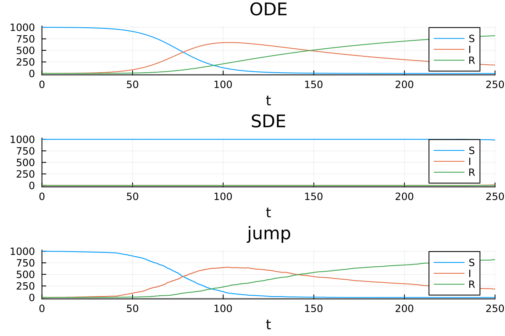

Catalyst.jl API
Reaction network generation and representation
Catalyst provides the @reaction_network macro for generating a complete network, stored as a ReactionSystem, which in turn is composed of Reactions. ReactionSystems can be converted to other ModelingToolkitBase.AbstractSystems, specifically a ModelingToolkitBase.System representing an ODE, SDE, or jump model.
When using the @reaction_network macro, Catalyst will automatically attempt to detect what is a species and what is a parameter. Everything that appear as a substrate or product in some reaction will be treated as a species, while all remaining symbols will be considered parameters (corresponding to those symbols that only appear within rate expressions and/or as stoichiometric coefficients). I.e. in
rn = @reaction_network begin
k * X, Y --> W
endY and W will all be classified as chemical species, while k and X will be classified as parameters.
The ReactionSystem generated by the @reaction_network macro is a ModelingToolkitBase.AbstractSystem that symbolically represents a system of chemical reactions. In some cases it can be convenient to bypass the macro and directly generate a collection of symbolic Reactions and a corresponding ReactionSystem encapsulating them. Below we illustrate with a simple SIR example how a system can be directly constructed, and demonstrate how to then generate from the ReactionSystem and solve corresponding chemical reaction ODE models, chemical Langevin equation SDE models, and stochastic chemical kinetics jump process models.
using Catalyst, OrdinaryDiffEq, StochasticDiffEq, JumpProcesses, Plots
t = default_t()
@parameters β γ
@species S(t) I(t) R(t)
rxs = [Reaction(β, [S,I], [I], [1,1], [2])
Reaction(γ, [I], [R])]
@named rs = ReactionSystem(rxs, t)
rs = complete(rs)
u₀map = [S => 999.0, I => 1.0, R => 0.0]
parammap = [β => 1/10000, γ => 0.01]
tspan = (0.0, 250.0)
# solve as ODEs
oprob = ODEProblem(rs, u₀map, tspan, parammap)
sol = solve(oprob, Tsit5())
p1 = plot(sol, title = "ODE")
# solve as SDEs
sprob = SDEProblem(rs, u₀map, tspan, parammap)
sol = solve(sprob, EM(), dt=.01, saveat = 2.0)
p2 = plot(sol, title = "SDE")
# solve as jump process
u₀map = [S => 999, I => 1, R => 0]
jprob = JumpProblem(rs, u₀map, tspan, parammap)
sol = solve(jprob)
p3 = plot(sol, title = "jump")
plot(p1, p2, p3; layout = (3,1))
Catalyst.default_t — Function
default_t()Return Catalyst's default independent time variable.
Use this when programmatically declaring species or constructing ReactionSystems so that the independent variable matches Catalyst's DSL defaults.
Examples
t = default_t()
@species X(t)Catalyst.default_time_deriv — Function
default_time_deriv()Return Catalyst's default time derivative operator.
This is the derivative with respect to default_t, and is useful when programmatically constructing equations involving time derivatives.
Examples
t = default_t()
D = default_time_deriv()
@species X(t)
eq = D(X) ~ -XCatalyst.@reaction_network — Macro
@reaction_networkMacro for generating chemical reaction network models (Catalyst ReactionSystems). See the (DSL introduction and advantage usage) sections of the Catalyst documentation for more details on the domain-specific language (DSL) that the macro implements. The macro's output (a ReactionSystem structure) is central to Catalyst and its functionality. How to e.g. simulate these is described in the Catalyst documentation.
Returns:
- A Catalyst
ReactionSystem, i.e. a symbolic model for the reaction network. The returned
system is marked complete. To obtain a ReactionSystem that is not marked complete, for example to then use in compositional modelling, see the otherwise equivalent @network_component macro.
Examples: Here we create a basic SIR model. It contains two reactions (infection and recovery):
sir_model = @reaction_network begin
c1, S + I --> 2I
c2, I --> R
endNext, we create a self-activation loop. Here, a single component (X) activates its own production with a Michaelis-Menten function:
sa_loop = @reaction_network begin
mm(X,v,K), 0 --> X
d, X --> 0
endThis model also contains production and degradation reactions, where 0 denotes that there are either no substrates or no products in a reaction.
Options: In addition to reactions, the macro also supports "option" inputs (permitting e.g. the addition of observables). Each option is designated by a tag starting with a @ followed by its input. A list of options can be found here.
Catalyst.@network_component — Macro
@network_componentEquivalent to @reaction_network except the generated ReactionSystem is not marked as complete.
Catalyst.make_empty_network — Function
make_empty_network(; iv=DEFAULT_IV, name=gensym(:ReactionSystem))Construct an empty ReactionSystem. iv is the independent variable, usually time, and name is the name to give the ReactionSystem.
Catalyst.@reaction — Macro
@reactionMacro for generating a single Reaction object using a similar syntax as the @reaction_network macro (but permitting only a single reaction). A more detailed introduction to the syntax can be found in the description of @reaction_network.
The @reaction macro is followed by a single line consisting of three parts:
- A rate (at which the reaction occurs).
- Any number of substrates (which are consumed by the reaction).
- Any number of products (which are produced by the reaction).
The output is a reaction (just like created using the Reaction constructor).
Examples: Here we create a simple binding reaction and store it in the variable rx:
rx = @reaction k, X + Y --> XYThe macro will automatically deduce X, Y, and XY to be species (as these occur as reactants) and k as a parameter (as it does not occur as a reactant).
The @reaction macro provides a more concise notation to the Reaction constructor. I.e. here we create the same reaction using both approaches, and also confirm that they are identical.
# Creates a reaction using the `@reaction` macro.
rx = @reaction k*v, A + B --> C + D
# Creates a reaction using the `Reaction` constructor.
t = default_t()
@parameters k v
@species A(t) B(t) C(t) D(t)
rx2 = Reaction(k*v, [A, B], [C, D])
# Confirms that the two approaches yield identical results:
rx1 == rx2Interpolation of already declared symbolic variables into @reaction is possible:
t = default_t()
@parameters k b
@species A(t)
ex = k*A^2 + t
rx = @reaction b*$ex*$A, $A --> CNotes:
@reactiondoes not support bi-directional type reactions (using<-->) or reaction bundling
(e.g. d, (X,Y) --> 0).
- Interpolation of Julia variables into the macro works similarly to the
@reaction_network
macro. See The Reaction DSL tutorial for more details.
Catalyst.@species — Macro
@species xs...Declare symbolic variables as Catalyst species.
@species accepts the same declaration syntax as ModelingToolkit's @variables, including defaults, metadata, and array declarations. Declared species carry Catalyst species metadata and can be used when programmatically constructing Reactions or ReactionSystems.
Examples
t = default_t()
@species S(t) I(t) R(t)
@species (X(t))[1:3] [description = "state vector"]Catalyst.Reaction — Type
struct Reaction{S, T}One chemical reaction.
Fields
rate: The rate function (excluding mass action terms).substrates: Reaction substrates.products: Reaction products.substoich: The stoichiometric coefficients of the reactants.prodstoich: The stoichiometric coefficients of the products.netstoich: The net stoichiometric coefficients of all species changed by the reaction.only_use_rate:false(default) ifrateshould be multiplied by mass action terms to give the rate law.trueifraterepresents the full reaction rate law.
metadata: Contain additional data, such whenever the reaction have a specific noise-scaling expression for the chemical Langevin equation.
Examples
using Catalyst
t = default_t()
@parameters k[1:20]
@species A(t) B(t) C(t) D(t)
rxs = [Reaction(k[1], nothing, [A]), # 0 -> A
Reaction(k[2], [B], nothing), # B -> 0
Reaction(k[3],[A],[C]), # A -> C
Reaction(k[4], [C], [A,B]), # C -> A + B
Reaction(k[5], [C], [A], [1], [2]), # C -> A + A
Reaction(k[6], [A,B], [C]), # A + B -> C
Reaction(k[7], [B], [A], [2], [1]), # 2B -> A
Reaction(k[8], [A,B], [A,C]), # A + B -> A + C
Reaction(k[9], [A,B], [C,D]), # A + B -> C + D
Reaction(k[10], [A], [C,D], [2], [1,1]), # 2A -> C + D
Reaction(k[11], [A], [A,B], [2], [1,1]), # 2A -> A + B
Reaction(k[12], [A,B,C], [C,D], [1,3,4], [2, 3]), # A+3B+4C -> 2C + 3D
Reaction(k[13], [A,B], nothing, [3,1], nothing), # 3A+B -> 0
Reaction(k[14], nothing, [A], nothing, [2]), # 0 -> 2A
Reaction(k[15]*A/(2+A), [A], nothing; only_use_rate=true), # A -> 0 with custom rate
Reaction(k[16], [A], [B]; only_use_rate=true), # A -> B with custom rate.
Reaction(k[17]*A*exp(B), [C], [D], [2], [1]), # 2C -> D with non constant rate.
Reaction(k[18]*B, nothing, [B], nothing, [2]), # 0 -> 2B with non constant rate.
Reaction(k[19]*t, [A], [B]), # A -> B with non constant rate.
Reaction(k[20]*t*A, [B,C], [D],[2,1],[2]) # 2A +B -> 2C with non constant rate.
]Notes:
nothingcan be used to indicate a reaction that has no reactants or no products. In this case the corresponding stoichiometry vector should also be set tonothing.- The three-argument form assumes all reactant and product stoichiometric coefficients are one.
- Pass
unit_checks = trueto validate unit consistency at construction time. When enabled, checks that all substrates and products share the same units, and that the rate expression has internally consistent additive terms. Default isfalse.
Catalyst.ReactionSystem — Type
struct ReactionSystem{V<:Catalyst.NetworkProperties} <: ModelingToolkitBase.AbstractSystemA system of chemical reactions.
Fields
eqs: The equations (reactions and algebraic/differential) defining the system.rxs: The Reactions defining the system.iv: Independent variable (usually time).sivs: Spatial independent variablesunknowns: All dependent (unknown) variables, species and non-species. Must not contain the independent variable.species: Dependent unknown variables representing speciesps: Parameter variables. Must not contain the independent variable.var_to_name: Maps Symbol to corresponding variable.observed: Equations for observed variables.name: The name of the systemsystems: Internal sub-systemsbindings: Binding relations for variables/parameters. The bound variable (key) is completely determined by the binding (value). Providing an initial condition for a bound variable is an error. Bindings for variables (ones created via@species,@variables, and@discretes) are treated as initial conditions.
initial_conditions: The initial values to use when initial conditions and/or parameters are not supplied to problem constructors.
networkproperties:NetworkPropertiesobject that can be filled in by API functions. INTERNAL – not considered part of the public API.combinatoric_ratelaws: Sets whether to use combinatoric scalings in rate laws. true by default.continuous_events: continuous_events: AVector{SymbolicContinuousCallback}that model events. The integrator will use root finding to guarantee that it steps at each zero crossing.
discrete_events: discrete_events: AVector{SymbolicDiscreteCallback}that models events. Symbolic analog toSciMLBase.DiscreteCallbackthat executes an affect when a given condition is true at the end of an integration step.
tstops: tstops: AVector{Any}of extra time points for the integrator to stop at. These can be numeric values or symbolic expressions of parameters and time.
brownians: Brownian variables for non-reaction noise, created via @brownians.poissonians: Poissonian variables for Poisson jump noise, created via @poissonians.jumps: Non-reaction jumps (VariableRateJump, ConstantRateJump, MassActionJump).metadata: Metadata for the system, to be used by downstream packages.
complete: complete: if a modelsysis complete, thensys.xno longer performs namespacing.
parent: The hierarchical parent system before simplification that MTK now seems to require for hierarchical namespacing to work in indexing.
Example
Continuing from the example in the Reaction definition:
# simple constructor that infers species and parameters
@named rs = ReactionSystem(rxs, t)
# allows specification of species and parameters
@named rs = ReactionSystem(rxs, t, [A,B,C,D], k)Keyword Arguments:
observed::Vector{Equation}, equations specifying observed variables.systems::Vector{ReactionSystem}, vector of sub-ReactionSystems.name::Symbol, the name of the system (must be provided, or@namedmust be used).initial_conditions::SymmapT, a dictionary mapping parameters and species to their initial values.checks = true, boolean for whether to run structural checks at construction time.unit_checks = false, boolean for whether to perform unit validation at construction time. UsesCatalyst.validate_units/Catalyst.assert_valid_units. Units should be specified with symbolic units (us"...") from DynamicQuantities.networkproperties = NetworkProperties(), cache for network properties calculated via API functions.combinatoric_ratelaws = true, sets the default value ofcombinatoric_ratelawsused in conversion functions (ode_model,sde_model,jump_model,ss_ode_model,hybrid_model) or when calling problem constructors with theReactionSystem.balanced_bc_check = true, sets whether to check that BC species appearing in reactions are balanced (i.e appear as both a substrate and a product with the same stoichiometry).tstops = [], a vector of extra time points for the integrator to stop at. These can be numeric values or symbolic expressions of parameters and time.brownians, vector of Brownian variables for non-reaction SDE noise (created via@brownians). Auto-discovered from equations in the two-argument constructor.poissonians, vector of Poissonian variables for Poisson jump noise (created via@poissonians). Auto-discovered from equations in the two-argument constructor.jumps, vector of non-reaction jump processes.
Catalyst.isspatial — Function
isspatial(rn::ReactionSystem)Return whether rn is a spatial reaction system.
Returns true when rn has spatial independent variables, and false otherwise.
Options for the @reaction_network DSL
We have previously described how options permit the user to supply non-reaction information to ReactionSystem created through the DSL. Here follows a list of all options currently available.
parameters: Allows the designation of a set of symbols as system parameters.species: Allows the designation of a set of symbols as system species.variables: Allows the designation of a set of symbols as system non-species variables.ivs: Allows the designation of a set of symbols as system independent variables.compounds: Allows the designation of compound species.observables: Allows the designation of compound observables.default_noise_scaling: Enables the setting of a default noise scaling expression.differentials: Allows the designation of differentials.equations: Allows the creation of algebraic and/or differential equations.continuous_events: Allows the creation of continuous events.discrete_events: Allows the creation of discrete events.brownians: Allows the creation of brownian processes that can be used to add noise to non-species variables.poissonians: Allows the creation of poissonian processes that can be used to add jump events to non-species variables.discretes: Creates discrete parameters, i.e. time-dependent parameters.combinatoric_ratelaws: Takes a single option (trueorfalse), which sets whether to use combinatorial rate laws.unit_checks: Takes a single option (trueorfalse) controlling whether unit validation runs during DSL construction (falseby default).
ModelingToolkitBase and Catalyst accessor functions
A ReactionSystem is an instance of a ModelingToolkitBase.AbstractSystem, and has a number of fields that can be accessed using the Catalyst API and the ModelingToolkitBase.jl Abstract System Interface. Below we overview these components.
There are three basic sets of convenience accessors that will return information either from a top-level system, the top-level system and all sub-systems that are also ReactionSystems (i.e. the full reaction-network), or the top-level system, all subs-systems, and all constraint systems (i.e. the full model). To retrieve info from just a base ReactionSystem rn, ignoring sub-systems of rn, one can use the ModelingToolkit accessors (these provide direct access to the corresponding internal fields of the ReactionSystem)
ModelingToolkitBase.get_unknowns(rn)is a vector that collects all the species defined withinrn, ordered by species and then non-species variables.Catalyst.get_species(rn)is a vector of all the species variables in the system. The entries inget_species(rn)correspond to the firstlength(get_species(rn))components inget_unknowns(rn).ModelingToolkitBase.get_ps(rn)is a vector that collects all the parameters defined within reactions inrn.ModelingToolkitBase.get_eqs(rn)is a vector that collects all theReactions andSymbolics.Equationdefined withinrn, ordering allReactions beforeEquations.Catalyst.get_rxs(rn)is a vector of all theReactions inrn, and corresponds to the firstlength(get_rxs(rn))entries inget_eqs(rn).ModelingToolkitBase.get_iv(rn)is the independent variable used in the system (usuallytto represent time).ModelingToolkitBase.get_systems(rn)is a vector of all sub-systems ofrn.ModelingToolkitBase.get_initial_conditions(rn)is a dictionary of all the initial values for parameters and species inrn.
The preceding accessors do not allocate, directly accessing internal fields of the ReactionSystem.
To retrieve information from the full reaction network represented by a system rn, which corresponds to information within both rn and all sub-systems, one can call:
ModelingToolkitBase.unknowns(rn)returns all species and variables across the system, all sub-systems. Species are ordered before non-species variables inunknowns(rn), with the firstnumspecies(rn)entries inunknowns(rn)being the same asspecies(rn).species(rn)is a vector collecting all the chemical species within the system and any sub-systems that are alsoReactionSystems.ModelingToolkitBase.parameters(rn)returns all parameters across the system, all sub-systems.ModelingToolkitBase.equations(rn)returns allReactions and allSymbolics.Equationsdefined across the system, all sub-systems.Reactions are ordered ahead ofEquations with the firstnumreactions(rn)entries inequations(rn)being the same asreactions(rn).reactions(rn)is a vector of all theReactions within the system and any sub-systems that are alsoReactionSystems.
These accessors will generally allocate new arrays to store their output unless there are no subsystems. In the latter case the usually return the same vector as the corresponding get_* function.
Below we list the remainder of the Catalyst API accessor functions mentioned above.
Basic system properties
See Programmatic Construction of Symbolic Reaction Systems for examples and ModelingToolkitBase and Catalyst Accessor Functions for more details on the basic accessor functions.
Catalyst.species — Function
species(network)Given a ReactionSystem, return a vector of all species defined in the system and any subsystems that are of type ReactionSystem. To get the species and non-species variables in the system and all subsystems, including non-ReactionSystem subsystems, uses unknowns(network).
Notes:
- If
ModelingToolkitBase.get_systems(network)is non-empty will allocate.
Catalyst.get_species — Function
get_species(sys::ReactionSystem)Return the current dependent variables that represent species in sys (toplevel system only).
Catalyst.nonspecies — Function
nonspecies(network)Return the non-species variables within the network, i.e. those unknowns for which isspecies == false.
Notes:
- Allocates a new array to store the non-species variables.
Catalyst.reactions — Function
reactions(network)Given a ReactionSystem, return a vector of all Reactions in the system.
Notes:
- If
ModelingToolkitBase.get_systems(network)is not empty, will allocate.
Catalyst.get_rxs — Function
get_rxs(sys::ReactionSystem)Return the system's Reaction vector (toplevel system only).
Catalyst.nonreactions — Function
nonreactions(network)Return the non-reaction equations within the network (i.e. algebraic and differential equations).
Notes:
- Allocates a new array to store the non-species variables.
Catalyst.numspecies — Function
numspecies(network)Return the total number of species within the given ReactionSystem and subsystems that are ReactionSystems.
Catalyst.numparams — Function
numparams(network)Return the total number of parameters within the given system and all subsystems.
Catalyst.numreactions — Function
numreactions(network)Return the total number of reactions within the given ReactionSystem and subsystems that are ReactionSystems.
Catalyst.speciesmap — Function
speciesmap(network)Given a ReactionSystem, return a Dictionary mapping species that participate in Reactions to their index within species(network).
Catalyst.paramsmap — Function
paramsmap(network)Given a ReactionSystem, return a Dictionary mapping from all parameters that appear within the system to their index within parameters(network).
Catalyst.isautonomous — Function
isautonomous(rs::ReactionSystem)
Checks if a system is autonomous (i.e. no rate or equation depend on the independent variable(s)). Example:
rs1 = @reaction_system
(p,d), 0 <--> X
end
isautonomous(rs1) # Returns `true`.
rs2 = @reaction_system
(p/t,d), 0 <--> X
end
isautonomous(rs2) # Returns `false`.Coupled reaction/equation system properties
The following system property accessor functions are primarily relevant to reaction system coupled to differential and/or algebraic equations.
ModelingToolkitBase.has_alg_equations — Function
has_alg_equations(sys::AbstractSystem)For a system, returns true if it contain at least one algebraic equation (i.e. that does not contain any differentials).
Example:
using ModelingToolkitBase
using ModelingToolkitBase: t_nounits as t, D_nounits as D
@parameters p d
@variables X(t)
eq1 = D(X) ~ p - d*X
eq2 = 0 ~ p - d*X
@named osys1 = System([eq1], t)
@named osys2 = System([eq2], t)
has_alg_equations(osys1) # returns `false`.
has_alg_equations(osys2) # returns `true`.ModelingToolkitBase.alg_equations — Function
alg_equations(sys::AbstractSystem)For a system, returns a vector of all its algebraic equations (i.e. that does not contain any differentials).
Example:
using ModelingToolkitBase
using ModelingToolkitBase: t_nounits as t, D_nounits as D
@parameters p d
@variables X(t)
eq1 = D(X) ~ p - d*X
eq2 = 0 ~ p - d*X
@named osys = System([eq1, eq2], t)
alg_equations(osys) # returns `[0 ~ p - d*X(t)]`.ModelingToolkitBase.has_diff_equations — Function
has_diff_equations(sys::AbstractSystem)For a system, returns true if it contain at least one differential equation (i.e. that contain a differential).
Example:
using ModelingToolkitBase
using ModelingToolkitBase: t_nounits as t, D_nounits as D
@parameters p d
@variables X(t)
eq1 = D(X) ~ p - d*X
eq2 = 0 ~ p - d*X
@named osys1 = System([eq1], t)
@named osys2 = System([eq2], t)
has_diff_equations(osys1) # returns `true`.
has_diff_equations(osys2) # returns `false`.ModelingToolkitBase.diff_equations — Function
diff_equations(sys::AbstractSystem)For a system, returns a vector of all its differential equations (i.e. that does contain a differential).
Example:
using ModelingToolkitBase
using ModelingToolkitBase: t_nounits as t, D_nounits as D
@parameters p d
@variables X(t)
eq1 = D(X) ~ p - d*X
eq2 = 0 ~ p - d*X
@named osys = System([eq1, eq2], t)
diff_equations(osys) # returns `[Differential(t)(X(t)) ~ p - d*X(t)]`.Basic species properties
The following functions permits the querying of species properties.
Catalyst.isspecies — Function
isspecies(s)Tests if the given symbolic variable corresponds to a chemical species.
Catalyst.isconstant — Function
Catalyst.isconstant(s)Tests if the given symbolic variable corresponds to a constant species.
Catalyst.isbc — Function
Catalyst.isbc(s)Tests if the given symbolic variable corresponds to a boundary condition species.
Catalyst.isvalidreactant — Function
isvalidreactant(s)Test if a species is valid as a reactant (i.e. a species variable or a constant parameter).
Symbolic variable properties
The following function from SymbolicIndexingInterface.jl is useful for getting the name of individual symbolic variables (species, parameters, or non-species variables).
SymbolicIndexingInterface.getname — Function
getname(x)::SymbolGet the name of a symbolic variable as a Symbol. Acts as the identity function for x::Symbol.
Basic reaction properties
Catalyst.ismassaction — Function
ismassaction(rx, rs; rxvars = get_variables(rx.rate),
haveivdep = nothing,
unknownset = Set(unknowns(rs)),
ivset = nothing)True if a given reaction is of mass action form, i.e. rx.rate does not depend on any chemical species that correspond to unknowns of the system, and does not depend explicitly on the independent variable (usually time).
Arguments
rx, theReaction.rs, aReactionSystemcontaining the reaction.- Optional:
rxvars,Variables which are not inrxvarsare ignored as possible dependencies. - Optional:
haveivdep,trueif theReactionratefield explicitly depends on any independent variable (i.e. t or for spatial systems x,y,etc). If not set, will be automatically calculated. - Optional:
unknownset, set of unknowns which if the rxvars are within mean rx is non-mass action. - Optional:
ivset, aSetof the independent variables of the system. If not provided and the system is spatial, i.e.isspatial(rs) == true, it will be created with all the spatial variables and the time variable. If the rate expression contains any element ofivset, thenismassaction(rx,rs) == false. Pass a custom set to control this behavior.
Notes:
- Non-integer stoichiometry is treated as non-mass action. This includes symbolic variables/terms or floating point numbers for stoichiometric coefficients.
Catalyst.dependents — Function
dependents(rx, network)Given a Reaction and a ReactionSystem, return a vector of the non-constant species and variables the reaction rate law depends on. e.g., for
k*W, 2X + 3Y --> 5Z + W
the returned vector would be [W(t),X(t),Y(t)].
Notes:
- Allocates
- Does not check for dependents within any subsystems.
- Constant species are not considered dependents since they are internally treated as parameters.
- If the rate expression depends on a non-species unknown variable that will be included in the dependents, i.e. in
t = default_t() @parameters k @variables V(t) @species A(t) B(t) C(t) rx = Reaction(k*V, [A, B], [C]) @named rs = ReactionSystem([rx], t) issetequal(dependents(rx, rs), [A,B,V]) == true
Catalyst.dependants — Function
dependents(rx, network)See documentation for dependents.
Catalyst.substoichmat — Function
substoichmat(rn; sparse=false)Returns the substrate stoichiometry matrix, $S$, with $S_{i j}$ the stoichiometric coefficient of the ith substrate within the jth reaction.
Note:
- Set sparse=true for a sparse matrix representation
- Note that constant species are not considered substrates, but just components that modify the associated rate law.
Catalyst.prodstoichmat — Function
prodstoichmat(rn; sparse=false)Returns the product stoichiometry matrix, $P$, with $P_{i j}$ the stoichiometric coefficient of the ith product within the jth reaction.
Note:
- Set sparse=true for a sparse matrix representation
- Note that constant species are not treated as products, but just components that modify the associated rate law.
Catalyst.netstoichmat — Function
netstoichmat(rn, sparse=false)Returns the net stoichiometry matrix, $N$, with $N_{i j}$ the net stoichiometric coefficient of the ith species within the jth reaction.
Notes:
- Set sparse=true for a sparse matrix representation
- Caches the matrix internally within
rnso subsequent calls are fast. - Note that constant species are not treated as reactants, but just components that modify the associated rate law. As such they do not contribute to the net stoichiometry matrix.
Catalyst.reactionrates — Function
reactionrates(network)Given a ReactionSystem, returns a vector of the symbolic reaction rates for each reaction.
Catalyst.PhysicalScale — Module
@enumx PhysicalScaleEnumX instance representing the physical scale of a reaction.
Notes: The following values are possible:
Auto: (DEFAULT) Lets Catalyst decide at the time of system conversion and/or problem generation at what physical scale to represent the reaction.ODE: The reaction is to be treated via an ordinary differential equation term.SDE: The reaction is to be treated via a stochastic differential equation (CLE) term.Jump: The reaction is to be treated via a jump process (stochastic chemical kinetics) term, letting Catalyst decide the specific jump type.VariableRateJump: The reaction is to be treated as a jump process (stochastic chemical kinetics) term, specifically assigning it to a VariableRateJump.
Reaction metadata
The following functions permits the retrieval of reaction metadata.
Catalyst.hasnoisescaling — Function
hasnoisescaling(reaction::Reaction)
Returns true if the input reaction has the noise_scaing metadata field assigned, else false.
Arguments:
reaction: The reaction we wish to check for thenoise_scaingmetadata field.
Example:
reaction = @reaction k, 0 --> X, [noise_scaling=0.0]
hasnoisescaling(reaction)Catalyst.getnoisescaling — Function
getnoisescaling(reaction::Reaction)
Returns noise_scaing metadata field for the input reaction.
Arguments:
reaction: The reaction we wish to retrieve thenoise_scaingmetadata field.
Example:
reaction = @reaction k, 0 --> X, [noise_scaling=0.0]
getnoisescaling(reaction)Catalyst.hasdescription — Function
hasdescription(reaction::Reaction)
Returns true if the input reaction has the description metadata field assigned, else false.
Arguments:
reaction: The reaction we wish to check for thedescriptionmetadata field.
Example:
reaction = @reaction k, 0 --> X, [description="A reaction"]
hasdescription(reaction)Catalyst.getdescription — Function
getdescription(reaction::Reaction)
Returns description metadata field for the input reaction.
Arguments:
reaction: The reaction we wish to retrieve thedescriptionmetadata field.
Example:
reaction = @reaction k, 0 --> X, [description="A reaction"]
getdescription(reaction)Catalyst.hasmisc — Function
hasmisc(reaction::Reaction)
Returns true if the input reaction has the misc metadata field assigned, else false.
Arguments:
reaction: The reaction we wish to check for themiscmetadata field.
Example:
reaction = @reaction k, 0 --> X, [misc="A reaction"]
hasmisc(reaction)Catalyst.getmisc — Function
getmisc(reaction::Reaction)
Returns misc metadata field for the input reaction.
Arguments:
reaction: The reaction we wish to retrieve themiscmetadata field.
Example:
reaction = @reaction k, 0 --> X, [misc="A reaction"]
getmisc(reaction)Notes:
- The
miscfield can contain any valid Julia structure. This mean that Catalyst cannot check it
for symbolic variables that are added here. This means that symbolic variables (e.g. parameters of species) that are stored here are not accessible to Catalyst. This can cause troubles when e.g. creating a ReactionSystem programmatically (in which case any symbolic variables stored in the misc metadata field should also be explicitly provided to the ReactionSystem constructor).
System-level metadata
The following types and functions allow storing and retrieving system-level metadata on a ReactionSystem. These are primarily intended for use by file parsers that need to attach extra mapping data (e.g., initial condition or parameter value maps) to a system.
Catalyst.U0Map — Type
U0MapMetadata key for storing initial condition / species value mappings on a ReactionSystem. Intended for use by file parsers that need to preserve mappings in a format different from initial_conditions.
See also: has_u0_map, get_u0_map, set_u0_map
Catalyst.ParameterMap — Type
ParameterMapMetadata key for storing parameter value mappings on a ReactionSystem. Intended for use by file parsers that need to preserve parameter mappings in a format different from initial_conditions.
See also: has_parameter_map, get_parameter_map, set_parameter_map
Catalyst.has_u0_map — Function
has_u0_map(rs::ReactionSystem)Returns true if the ReactionSystem has a U0Map metadata entry.
Catalyst.get_u0_map — Function
get_u0_map(rs::ReactionSystem)Returns the U0Map metadata from the ReactionSystem, or nothing if no U0Map has been set.
Catalyst.set_u0_map — Function
set_u0_map(rs::ReactionSystem, u0map)Returns a new ReactionSystem with the U0Map metadata set to u0map. The original system is not modified.
Catalyst.has_parameter_map — Function
has_parameter_map(rs::ReactionSystem)Returns true if the ReactionSystem has a ParameterMap metadata entry.
Catalyst.get_parameter_map — Function
get_parameter_map(rs::ReactionSystem)Returns the ParameterMap metadata from the ReactionSystem, or nothing if no ParameterMap has been set.
Catalyst.set_parameter_map — Function
set_parameter_map(rs::ReactionSystem, pmap)Returns a new ReactionSystem with the ParameterMap metadata set to pmap. The original system is not modified.
Functions to extend or modify a network
ReactionSystems can be programmatically extended using ModelingToolkitBase.extend and ModelingToolkitBase.compose.
ModelingToolkitBase.extend — Function
extend(
sys::ModelingToolkitBase.AbstractSystem,
basesys::ModelingToolkitBase.AbstractSystem;
name,
description,
gui_metadata
) -> ReactionSystem{Catalyst.NetworkProperties{Int64, SymbolicUtils.BasicSymbolicImpl.var"typeof(BasicSymbolicImpl)"{SymReal}}}
Extend basesys with sys. This can be thought of as the merge operation on systems. Values in sys take priority over duplicates in basesys (for example, initial conditions).
By default, the resulting system inherits sys's name and description.
The & operator can also be used for this purpose. sys & basesys is equivalent to extend(sys, basesys).
See also compose.
extend(
sys,
basesys::Array{T<:ModelingToolkitBase.AbstractSystem, 1}
) -> Any
Extend sys with all systems in basesys in order.
ModelingToolkitBase.extend(sys::ReactionSystem, rs::ReactionSystem; name::Symbol=nameof(sys))Extends the indicated ReactionSystem with another ReactionSystem.
Notes:
- Only
ReactionSystems can be used to extend aReactionSystem. - Returns a new
ReactionSystemand does not modifyrs. - By default, the new
ReactionSystemwill have the same name assys.
ModelingToolkitBase.compose — Function
compose(sys, systems; name)
Compose multiple systems together. This adds all of systems as subsystems of sys. The resulting system inherits the name of sys by default.
The ∘ operator can also be used for this purpose. sys ∘ basesys is equivalent to compose(sys, basesys).
See also extend.
compose(syss...; name) -> Any
Syntactic sugar for adding all systems in syss as the subsystems of first(syss).
ModelingToolkitBase.compose(sys::ReactionSystem, systems::AbstractArray; name = nameof(sys))Compose the indicated ReactionSystem with one or more ReactionSystems.
Notes:
- Only
ReactionSystems can be composed with aReactionSystem. - Returns a new
ReactionSystemand does not modifysys. - By default, the new
ReactionSystemwill have the same name assys. - Brownians and jumps from subsystems are collected at flatten time via recursive accessors.
ModelingToolkitBase.flatten — Function
flatten(sys::System) -> System
flatten(sys::System, noeqs) -> System
Flatten the hierarchical structure of a system, collecting all equations, unknowns, etc. into one top-level system after namespacing appropriately.
ModelingToolkitBase.flatten(rs::ReactionSystem)Merges all subsystems of the given ReactionSystem up into rs.
Notes:
- Returns a new
ReactionSystemthat represents the flattened system. - All
Reactions within subsystems are namespaced and merged into the list ofReactionsofrs. The merged list is then available asreactions(rs). - All algebraic and differential equations are merged in the equations of
rs. - Only
ReactionSystems are supported as subsystems when flattening. rs.networkpropertiesis reset upon flattening.- The default value of
combinatoric_ratelawswill be the logical or of allReactionSystems.
Network visualization
Latexify can be used to convert networks to LaTeX equations by
using Latexify
latexify(rn)An optional argument, form allows using latexify to display a reaction network's ODE (as generated by the reaction rate equation) or SDE (as generated by the chemical Langevin equation) form:
latexify(rn; form = :ode)
latexify(rn; form = :ode, math_delimiters = true) # hidelatexify(rn; form = :sde)
latexify(rn; form = :sde, math_delimiters = true) # hideFinally, another optional argument (expand_functions=true) automatically expands functions defined by Catalyst (such as mm). To disable this, set expand_functions=false.
Reaction networks can be plotted using the GraphMakie extension, which is loaded whenever all of Catalyst, GraphMakie, and NetworkLayout are loaded (note that a Makie backend, like CairoMakie, must be loaded as well). The two functions for plotting networks are plot_network and plot_complexes, which are two distinct representations.
Catalyst.plot_network — Method
plot_network(rn::ReactionSystem; kwargs...)Converts a ReactionSystem into a GraphMakie plot of the species reaction graph (or Petri net representation). Reactions correspond to small green circles, and species to blue circles.
Notes:
- Black arrows from species to reactions indicate reactants, and are labelled with their input stoichiometry.
- Black arrows from reactions to species indicate products, and are labelled with their output stoichiometry.
- Red arrows from species to reactions indicate that species is used within the rate expression. For example, in the reaction
k*A, B --> C, there would be a red arrow fromAto the reaction node. Ink*A, A+B --> C, there would be red and black arrows fromAto the reaction node.
For a list of accepted keyword arguments to the graph plot, please see the GraphMakie documentation.
Catalyst.plot_complexes — Method
plot_complexes(rn::ReactionSystem; show_rate_labels = false, kwargs...)Creates a GraphMakie plot of the Catalyst.ReactionComplexs in rn. Reactions correspond to arrows and reaction complexes to blue circles.
Notes:
- Black arrows from complexes to complexes indicate reactions whose rate is a parameter or a
Number. i.e.k, A --> B. - Red arrows from complexes to complexes indicate reactions whose rate constants
depends on species. i.e. k*C, A --> B for C a species.
- The
show_rate_labelskeyword, if set totrue, will annotate each edge
with the rate constant for the reaction.
For a list of accepted keyword arguments to the graph plot, please see the GraphMakie documentation.
Catalyst.plot_network — Function
plot_network(rn::ReactionSystem; kwargs...)Plot the species-reaction graph of rn.
This extension function is available after loading GraphMakie.jl and NetworkLayout.jl. Keyword arguments are forwarded to the GraphMakie plotting recipe.
Examples
using Catalyst, GraphMakie, CairoMakie
rn = @reaction_network begin
k, A --> B
end
plot_network(rn)Catalyst.plot_complexes — Function
plot_complexes(rn::ReactionSystem; show_rate_labels = false, kwargs...)Plot the reaction-complex graph of rn.
This extension function is available after loading GraphMakie.jl and NetworkLayout.jl. Set show_rate_labels = true to label graph edges by their reaction rates.
Examples
using Catalyst, GraphMakie, CairoMakie
rn = @reaction_network begin
k, A --> B
end
plot_complexes(rn)Rate laws
As the underlying ReactionSystem is comprised of ModelingToolkitBase expressions, one can directly access the generated rate laws, and using ModelingToolkitBase tooling generate functions or Julia Exprs from them.
Catalyst.oderatelaw — Function
oderatelaw(rx; combinatoric_ratelaw=true)Given a Reaction, return the symbolic reaction rate law used in generated ODEs for the reaction. Note, for a reaction defined by
k*X*Y, X+Z --> 2X + Y
the expression that is returned will be k*X(t)^2*Y(t)*Z(t). For a reaction of the form
k, 2X+3Y --> Z
the expression that is returned will be k * (X(t)^2/2) * (Y(t)^3/6).
Notes:
- Allocates
combinatoric_ratelaw=trueuses factorial scaling factors in calculating the rate law, i.e. for2S -> 0at ratekthe ratelaw would bek*S^2/2!. Ifcombinatoric_ratelaw=falsethen the ratelaw isk*S^2, i.e. the scaling factor is ignored.
Catalyst.jumpratelaw — Function
jumpratelaw(rx; combinatoric_ratelaw=true)Given a Reaction, return the symbolic reaction rate law used in generated stochastic chemical kinetics model SSAs for the reaction. Note, for a reaction defined by
k*X*Y, X+Z --> 2X + Y
the expression that is returned will be k*X^2*Y*Z. For a reaction of the form
k, 2X+3Y --> Z
the expression that is returned will be k * binomial(X,2) * binomial(Y,3).
Notes:
- Allocates
combinatoric_ratelaw=trueuses binomials in calculating the rate law, i.e. for2S -> 0at ratekthe ratelaw would bek*S*(S-1)/2. Ifcombinatoric_ratelaw=falsethen the ratelaw isk*S*(S-1), i.e. the rate law is not normalized by the scaling factor.
Catalyst.mm — Function
mm(X,v,K) = v*X / (X + K)A Michaelis-Menten rate function.
Catalyst.mmr — Function
mmr(X,v,K) = v*K / (X + K)A repressive Michaelis-Menten rate function.
Catalyst.hill — Function
hill(X,v,K,n) = v*(X^n) / (X^n + K^n)A Hill rate function.
Catalyst.hillr — Function
hillr(X,v,K,n) = v*(K^n) / (X^n + K^n)A repressive Hill rate function.
Catalyst.hillar — Function
hillar(X,Y,v,K,n) = v*(X^n) / (X^n + Y^n + K^n)An activation/repressing Hill rate function.
Transformations and ReactionSystem Conversions
SciMLBase.ODEProblem — Type
Defines an ordinary differential equation (ODE) problem. Documentation Page: https://docs.sciml.ai/DiffEqDocs/stable/types/ode_types/
Mathematical Specification of an ODE Problem
To define an ODE Problem, you simply need to give the function $f$ and the initial condition $u_0$ which define an ODE:
\[M \frac{du}{dt} = f(u,p,t)\]
There are two different ways of specifying f:
f(du,u,p,t): in-place. Memory-efficient when avoiding allocations. Best option for most cases unless mutation is not allowed.f(u,p,t): returningdu. Less memory-efficient way, particularly suitable when mutation is not allowed (e.g. with certain automatic differentiation packages such as Zygote).
u₀ should be an AbstractArray (or number) whose geometry matches the desired geometry of u. Note that we are not limited to numbers or vectors for u₀; one is allowed to provide u₀ as arbitrary matrices / higher dimension tensors as well.
For the mass matrix $M$, see the documentation of ODEFunction.
Problem Type
Constructors
ODEProblem can be constructed by first building an ODEFunction or by simply passing the ODE right-hand side to the constructor. The constructors are:
ODEProblem(f::ODEFunction,u0,tspan,p=NullParameters();kwargs...)ODEProblem{isinplace,specialize}(f,u0,tspan,p=NullParameters();kwargs...): Defines the ODE with the specified functions.isinplaceoptionally sets whether the function is inplace or not. This is determined automatically, but not inferred.specializeoptionally controls the specialization level. See the Specialization Levels for more details. The default isAutoSpecialize.
For more details on the in-place and specialization controls, see the ODEFunction documentation.
Parameters are optional, and if not given, then a NullParameters() singleton will be used which will throw nice errors if you try to index non-existent parameters. Any extra keyword arguments are passed on to the solvers. For example, if you set a callback in the problem, then that callback will be added in every solve call.
For specifying Jacobians and mass matrices, see the ODEFunction documentation.
Fields
f: The function in the ODE.u0: The initial condition.tspan: The timespan for the problem.p: The parameters.kwargs: The keyword arguments passed onto the solves.
Example Problem
using SciMLBase
function lorenz!(du,u,p,t)
du[1] = 10.0(u[2]-u[1])
du[2] = u[1]*(28.0-u[3]) - u[2]
du[3] = u[1]*u[2] - (8/3)*u[3]
end
u0 = [1.0;0.0;0.0]
tspan = (0.0,100.0)
prob = ODEProblem(lorenz!,u0,tspan)
# Test that it worked
using OrdinaryDiffEq
sol = solve(prob,Tsit5())
using Plots; plot(sol,vars=(1,2,3))More Example Problems
Example problems can be found in DiffEqProblemLibrary.jl.
To use a sample problem, such as prob_ode_linear, you can do something like:
#] add ODEProblemLibrary
using ODEProblemLibrary
prob = ODEProblemLibrary.prob_ode_linear
sol = solve(prob)SciMLBase.SciMLBase.ODEProblem(sys::System, op, tspan::NTuple{2}; kwargs...)
SciMLBase.SciMLBase.ODEProblem{iip}(sys::System, op, tspan::NTuple{2}; kwargs...)
SciMLBase.SciMLBase.ODEProblem{iip, specialize}(sys::System, op, tspan::NTuple{2}; kwargs...)Build a SciMLBase.ODEProblem given a system sys and operating point op and timespan tspan. iip is a boolean indicating whether the problem should be in-place. specialization is a SciMLBase.AbstractSpecalize subtype indicating the level of specialization of the SciMLBase.ODEFunction. The operating point should be an iterable collection of key-value pairs mapping variables/parameters in the system to the (initial) values they should take in SciMLBase.ODEProblem. Any values not provided will fallback to the corresponding default (if present).
ModelingToolkitBase will build an initialization problem where all initial values for unknowns or observables of sys (either explicitly provided or in defaults) will be constraints. To remove an initial condition in the defaults (without providing a replacement) give the corresponding variable a value of nothing in the operating point. The initialization problem will also run parameter initialization. See the Initialization documentation for more information.
Keyword arguments
eval_expression: Whether to compile any functions viaevalorRuntimeGeneratedFunctions.eval_module: Ifeval_expression == true, the module toevalinto. Otherwise, the module in which to generate theRuntimeGeneratedFunction.guesses: The guesses for variables in the system, used as initial values for the initialization problem.warn_initialize_determined: Warn if the initialization system is under/over-determined.initialization_eqs: Extra equations to use in the initialization problem.fully_determined: Override whether the initialization system is fully determined.use_scc: Whether to useSCCNonlinearProblemfor initialization if the system is fully determined.check_initialization_units: Enable or disable unit checks when constructing the initialization problem.tofloat: Passed tovarmap_to_varswhen building the parameter vector of a non-split system.u0_eltype: Theeltypeof theu0vector. Ifnothing, finds the promoted floating point type fromop.u0_constructor: A function to apply to theu0value returned fromvarmap_to_vars. to construct the finalu0value.p_constructor: A function to apply to each array buffer created when constructing the parameter object.warn_cyclic_dependency: Whether to emit a warning listing out cycles in initial conditions provided for unknowns and parameters.circular_dependency_max_cycle_length: Maximum length of cycle to check for. Only applicable ifwarn_cyclic_dependency == true.circular_dependency_max_cycles: Maximum number of cycles to check for. Only applicable ifwarn_cyclic_dependency == true.substitution_limit: The number times to substitute initial conditions into each other to attempt to arrive at a numeric value.missing_guess_value: An instance ofMissingGuessValuewhich indicates what happens when the initialization problem is missing guess values for variables.initsys_mtkcompile_kwargs: ANamedTupleof keyword arguments to pass tomtkcompilewhen it is called on the initialization system.callback: An extra callback orCallbackSetto add to the problem, in addition to the ones defined symbolically in the system.check_compatibility: Whether to check if the given systemsyscontains all the information necessary to create aSciMLBase.ODEProblemand no more. If disabled, assumes thatsysat least contains the necessary information.expression:Val{true}to return anExprthat constructs the corresponding problem instead of the problem itself.Val{false}otherwise. Constructing the expression does not support callbacks
All other keyword arguments are forwarded to the SciMLBase.ODEFunction constructor.
Extended docs
The following API is internal and may change or be removed without notice. Its usage is highly discouraged.
build_initializeprob: Iffalse, avoids building the initialization problem.check_length: Whether to check the number of equations along with number of unknowns and length ofu0vector for consistency. Iffalse, do not check with equations. This is forwarded tocheck_eqs_u0.return_operating_point: Whether to also return the updated operating point.time_dependent_init: Whether to build a time-dependent initialization for the problem. A time-dependent initialization solves for a consistentu0, whereas a time-independent one only runs parameter initialization.algebraic_only: Whether to build the initialization problem using only algebraic equations.allow_incomplete: Whether to allow incomplete initialization problems.
SciMLBase.SDEProblem — Type
Defines an stochastic differential equation (SDE) problem. Documentation Page: https://docs.sciml.ai/DiffEqDocs/stable/types/sde_types/
Mathematical Specification of a SDE Problem
To define an SDE Problem, you simply need to give the forcing function f, the noise function g, and the initial condition u₀ which define an SDE:
\[du = f(u,p,t) \, dt + ∑ᵢ gᵢ(u,p,t) \, dWⁱ\]
f and g should be specified as f(u,p,t) and g(u,p,t) respectively, and u₀ should be an AbstractArray whose geometry matches the desired geometry of u. Note that we are not limited to numbers or vectors for u₀; one is allowed to provide u₀ as arbitrary matrices / higher dimension tensors as well. A vector of gs can also be defined to determine an SDE of higher Ito dimension.
Problem Type
Wraps the data which defines an SDE problem
\[u = f(u,p,t) \, dt + ∑ᵢ gᵢ(u,p,t) \, dWⁱ\]
with initial condition u0.
Constructors
SDEProblem(f::SDEFunction,u0,tspan,p=NullParameters();noise=WHITE_NOISE,noise_rate_prototype=nothing)SDEProblem{isinplace,specialize}(f,g,u0,tspan,p=NullParameters();noise=WHITE_NOISE,noise_rate_prototype=nothing): Defines the SDE with the specified functions. The default noise isWHITE_NOISE.isinplaceoptionally sets whether the function is inplace or not. This is determined automatically, but not inferred.specializeoptionally controls the specialization level. See Specialization Levels for more details. The default isAutoSpecialize.
Parameters are optional, and if not given then a NullParameters() singleton will be used which will throw nice errors if you try to index non-existent parameters. Any extra keyword arguments are passed on to the solvers. For example, if you set a callback in the problem, then that callback will be added in every solve call.
For specifying Jacobians and mass matrices, see the SciMLFunctions interface page.
Fields
f: The drift function in the SDE.g: The noise function in the SDE.u0: The initial condition.tspan: The timespan for the problem.p: The optional parameters for the problem. Defaults toNullParameters.noise: The noise process applied to the noise upon generation. Defaults to Gaussian white noise. For information on defining different noise processes, see the noise process documentation.noise_rate_prototype: A prototype type instance for the noise rates, that is the outputg. It can be any type which overloadsA_mul_B!with itself being the middle argument. Commonly, this is a matrix or sparse matrix. If this is not given, it defaults tonothing, which means the problem should be interpreted as having diagonal noise.kwargs: The keyword arguments passed onto the solves.
Example Problems
Examples problems can be found in DiffEqProblemLibrary.jl.
To use a sample problem, such as prob_sde_linear, you can do something like:
#] add SDEProblemLibrary
using SDEProblemLibrary
prob = SDEProblemLibrary.prob_sde_linear
sol = solve(prob)SciMLBase.SciMLBase.SDEProblem(sys::System, op, tspan::NTuple{2}; kwargs...)
SciMLBase.SciMLBase.SDEProblem{iip}(sys::System, op, tspan::NTuple{2}; kwargs...)
SciMLBase.SciMLBase.SDEProblem{iip, specialize}(sys::System, op, tspan::NTuple{2}; kwargs...)Build a SciMLBase.SDEProblem given a system sys and operating point op and timespan tspan. iip is a boolean indicating whether the problem should be in-place. specialization is a SciMLBase.AbstractSpecalize subtype indicating the level of specialization of the SciMLBase.SDEFunction. The operating point should be an iterable collection of key-value pairs mapping variables/parameters in the system to the (initial) values they should take in SciMLBase.SDEProblem. Any values not provided will fallback to the corresponding default (if present).
ModelingToolkitBase will build an initialization problem where all initial values for unknowns or observables of sys (either explicitly provided or in defaults) will be constraints. To remove an initial condition in the defaults (without providing a replacement) give the corresponding variable a value of nothing in the operating point. The initialization problem will also run parameter initialization. See the Initialization documentation for more information.
Keyword arguments
eval_expression: Whether to compile any functions viaevalorRuntimeGeneratedFunctions.eval_module: Ifeval_expression == true, the module toevalinto. Otherwise, the module in which to generate theRuntimeGeneratedFunction.guesses: The guesses for variables in the system, used as initial values for the initialization problem.warn_initialize_determined: Warn if the initialization system is under/over-determined.initialization_eqs: Extra equations to use in the initialization problem.fully_determined: Override whether the initialization system is fully determined.use_scc: Whether to useSCCNonlinearProblemfor initialization if the system is fully determined.check_initialization_units: Enable or disable unit checks when constructing the initialization problem.tofloat: Passed tovarmap_to_varswhen building the parameter vector of a non-split system.u0_eltype: Theeltypeof theu0vector. Ifnothing, finds the promoted floating point type fromop.u0_constructor: A function to apply to theu0value returned fromvarmap_to_vars. to construct the finalu0value.p_constructor: A function to apply to each array buffer created when constructing the parameter object.warn_cyclic_dependency: Whether to emit a warning listing out cycles in initial conditions provided for unknowns and parameters.circular_dependency_max_cycle_length: Maximum length of cycle to check for. Only applicable ifwarn_cyclic_dependency == true.circular_dependency_max_cycles: Maximum number of cycles to check for. Only applicable ifwarn_cyclic_dependency == true.substitution_limit: The number times to substitute initial conditions into each other to attempt to arrive at a numeric value.missing_guess_value: An instance ofMissingGuessValuewhich indicates what happens when the initialization problem is missing guess values for variables.initsys_mtkcompile_kwargs: ANamedTupleof keyword arguments to pass tomtkcompilewhen it is called on the initialization system.callback: An extra callback orCallbackSetto add to the problem, in addition to the ones defined symbolically in the system.check_compatibility: Whether to check if the given systemsyscontains all the information necessary to create aSciMLBase.SDEProblemand no more. If disabled, assumes thatsysat least contains the necessary information.expression:Val{true}to return anExprthat constructs the corresponding problem instead of the problem itself.Val{false}otherwise. Constructing the expression does not support callbacks
All other keyword arguments are forwarded to the SciMLBase.SDEFunction constructor.
Extended docs
The following API is internal and may change or be removed without notice. Its usage is highly discouraged.
build_initializeprob: Iffalse, avoids building the initialization problem.check_length: Whether to check the number of equations along with number of unknowns and length ofu0vector for consistency. Iffalse, do not check with equations. This is forwarded tocheck_eqs_u0.return_operating_point: Whether to also return the updated operating point.time_dependent_init: Whether to build a time-dependent initialization for the problem. A time-dependent initialization solves for a consistentu0, whereas a time-independent one only runs parameter initialization.algebraic_only: Whether to build the initialization problem using only algebraic equations.allow_incomplete: Whether to allow incomplete initialization problems.
JumpProcesses.JumpProblem — Type
mutable struct JumpProblem{iip, P, A, C, J<:Union{Nothing, JumpProcesses.AbstractJumpAggregator}, J1, J2, J3, J4, R, K} <: SciMLBase.AbstractJumpProblem{P, J<:Union{Nothing, JumpProcesses.AbstractJumpAggregator}}Defines a collection of jump processes to associate with another problem type.
Constructors
JumpProblems can be constructed by first building another problem type to which the jumps will be associated. For example, to simulate a collection of jump processes for which the transition rates are constant between jumps (called ConstantRateJumps or MassActionJumps), we must first construct a DiscreteProblem
prob = DiscreteProblem(u0, p, tspan)where u0 is the initial condition, p the parameters and tspan the time span. If we wanted to have the jumps coupled with a system of ODEs, or have transition rates with explicit time dependence, we would use an ODEProblem instead that defines the ODE portion of the dynamics.
Given prob we define the jumps via
JumpProblem(prob, aggregator::AbstractAggregatorAlgorithm, jumps::JumpSet ; kwargs...)JumpProblem(prob, aggregator::AbstractAggregatorAlgorithm, jumps...; kwargs...)
Here aggregator specifies the underlying algorithm for calculating next jump times and types, for example Direct. The collection of different AbstractJump types can then be passed within a single JumpSet or as subsequent sequential arguments.
Fields
prob: The type of problem to couple the jumps to. For a pure jump process useDiscreteProblem, to couple to ODEs,ODEProblem, etc.aggregator: The aggregator algorithm that determines the next jump times and types forConstantRateJumps andMassActionJumps. Examples includeDirect.discrete_jump_aggregation: The underlying state data associated with the chosen aggregator.jump_callback:CallBackSetwith the underlyingConstantRateandVariableRatejumps.constant_jumps: TheConstantRateJumps.variable_jumps: TheVariableRateJumps.regular_jump: TheRegularJumps.massaction_jump: TheMassActionJumps.rng: The random number generator to use.kwargs: kwargs to pass on to solve call.
Keyword Arguments
rng, the random number generator to use. Defaults to Julia's built-in generator.save_positions=(true,true)when including variable rates and(false,true)for constant rates, specifies whether to save the system's state (before, after) the jump occurs. NOTE, this only controls saving for non-VariableRateJumps.VariableRateJumpsaving is controlled at the individual jump level via the value of this kwarg passed to the individualVariableRateJumps constructor when it is created.spatial_system, for spatial problems the underlying spatial structure.hopping_constants, for spatial problems the spatial transition rate coefficients.use_vrj_bounds = true, set to false to disable handling boundedVariableRateJumps with a supporting aggregator (such asCoevolve). They will then be handled via the continuous integration interface, and treated like generalVariableRateJumps.vr_aggregator, indicates the aggregator to use for sampling variable rate jumps. Current default isVR_FRM.
Please see the tutorial page in the DifferentialEquations.jl docs for usage examples and commonly asked questions.
SciMLBase.JumpProcesses.JumpProblem(sys::System, op, tspan::NTuple{2}; kwargs...)
SciMLBase.JumpProcesses.JumpProblem{iip}(sys::System, op, tspan::NTuple{2}; kwargs...)
SciMLBase.JumpProcesses.JumpProblem{iip, specialize}(sys::System, op, tspan::NTuple{2}; kwargs...)Build a JumpProcesses.JumpProblem given a system sys and operating point op and timespan tspan. iip is a boolean indicating whether the problem should be in-place. specialization is a SciMLBase.AbstractSpecalize subtype indicating the level of specialization of the inner SciMLFunction. The operating point should be an iterable collection of key-value pairs mapping variables/parameters in the system to the (initial) values they should take in JumpProcesses.JumpProblem. Any values not provided will fallback to the corresponding default (if present).
Keyword arguments
eval_expression: Whether to compile any functions viaevalorRuntimeGeneratedFunctions.eval_module: Ifeval_expression == true, the module toevalinto. Otherwise, the module in which to generate theRuntimeGeneratedFunction.guesses: The guesses for variables in the system, used as initial values for the initialization problem.warn_initialize_determined: Warn if the initialization system is under/over-determined.initialization_eqs: Extra equations to use in the initialization problem.fully_determined: Override whether the initialization system is fully determined.use_scc: Whether to useSCCNonlinearProblemfor initialization if the system is fully determined.check_initialization_units: Enable or disable unit checks when constructing the initialization problem.tofloat: Passed tovarmap_to_varswhen building the parameter vector of a non-split system.u0_eltype: Theeltypeof theu0vector. Ifnothing, finds the promoted floating point type fromop.u0_constructor: A function to apply to theu0value returned fromvarmap_to_vars. to construct the finalu0value.p_constructor: A function to apply to each array buffer created when constructing the parameter object.warn_cyclic_dependency: Whether to emit a warning listing out cycles in initial conditions provided for unknowns and parameters.circular_dependency_max_cycle_length: Maximum length of cycle to check for. Only applicable ifwarn_cyclic_dependency == true.circular_dependency_max_cycles: Maximum number of cycles to check for. Only applicable ifwarn_cyclic_dependency == true.substitution_limit: The number times to substitute initial conditions into each other to attempt to arrive at a numeric value.missing_guess_value: An instance ofMissingGuessValuewhich indicates what happens when the initialization problem is missing guess values for variables.initsys_mtkcompile_kwargs: ANamedTupleof keyword arguments to pass tomtkcompilewhen it is called on the initialization system.callback: An extra callback orCallbackSetto add to the problem, in addition to the ones defined symbolically in the system.check_compatibility: Whether to check if the given systemsyscontains all the information necessary to create aJumpProcesses.JumpProblemand no more. If disabled, assumes thatsysat least contains the necessary information.expression:Val{true}to return anExprthat constructs the corresponding problem instead of the problem itself.Val{false}otherwise. Constructing the expression does not support callbacks
All other keyword arguments are forwarded to the inner SciMLFunction constructor.
Extended docs
The following API is internal and may change or be removed without notice. Its usage is highly discouraged.
build_initializeprob: Iffalse, avoids building the initialization problem.check_length: Whether to check the number of equations along with number of unknowns and length ofu0vector for consistency. Iffalse, do not check with equations. This is forwarded tocheck_eqs_u0.return_operating_point: Whether to also return the updated operating point.time_dependent_init: Whether to build a time-dependent initialization for the problem. A time-dependent initialization solves for a consistentu0, whereas a time-independent one only runs parameter initialization.algebraic_only: Whether to build the initialization problem using only algebraic equations.allow_incomplete: Whether to allow incomplete initialization problems.
SciMLBase.NonlinearProblem — Type
Defines a nonlinear system problem. Documentation Page: https://docs.sciml.ai/NonlinearSolve/stable/basics/nonlinear_problem/
Mathematical Specification of a Nonlinear Problem
To define a Nonlinear Problem, you simply need to give the function $f$ which defines the nonlinear system:
\[f(u,p) = 0\]
and an initial guess $u₀$ of where f(u, p) = 0. f should be specified as f(u, p) (or in-place as f(du, u, p)), and u₀ should be an AbstractArray (or number) whose geometry matches the desired geometry of u. Note that we are not limited to numbers or vectors for u₀; one is allowed to provide u₀ as arbitrary matrices / higher-dimension tensors as well.
Problem Type
Constructors
NonlinearProblem(f::NonlinearFunction, u0, p = NullParameters(); kwargs...)
NonlinearProblem{isinplace}(f, u0, p = NullParameters(); kwargs...)isinplace optionally sets whether the function is in-place or not. This is determined automatically, but not inferred.
Parameters are optional, and if not given, then a NullParameters() singleton will be used, which will throw nice errors if you try to index non-existent parameters. Any extra keyword arguments are passed on to the solvers. For example, if you set a callback in the problem, then that callback will be added in every solve call.
For specifying Jacobians and mass matrices, see the nonlinear function types.
Fields
f: The function in the problem.u0: The initial guess for the root.p: The parameters for the problem. Defaults toNullParameters.lb: Lower bounds for the solution. Defaults tonothing.ub: Upper bounds for the solution. Defaults tonothing.kwargs: The keyword arguments passed on to the solvers.
SciMLBase.SciMLBase.NonlinearProblem(sys::System, op; kwargs...)
SciMLBase.SciMLBase.NonlinearProblem{iip}(sys::System, op; kwargs...)
SciMLBase.SciMLBase.NonlinearProblem{iip, specialize}(sys::System, op; kwargs...)Build a SciMLBase.NonlinearProblem given a system sys and operating point op . iip is a boolean indicating whether the problem should be in-place. specialization is a SciMLBase.AbstractSpecalize subtype indicating the level of specialization of the SciMLBase.NonlinearFunction. The operating point should be an iterable collection of key-value pairs mapping variables/parameters in the system to the (initial) values they should take in SciMLBase.NonlinearProblem. Any values not provided will fallback to the corresponding default (if present).
ModelingToolkitBase will build an initialization problem that will run parameter initialization. Since it does not solve for initial values of unknowns, observed equations will not be initialization constraints. If an initialization equation of the system must involve the initial value of an unknown x, it must be used as Initial(x) in the equation. For example, an equation to be used to solve for parameter p in terms of unknowns x and y must be provided as Initial(x) + Initial(y) ~ p instead of x + y ~ p. See the Initialization documentation for more information.
Keyword arguments
eval_expression: Whether to compile any functions viaevalorRuntimeGeneratedFunctions.eval_module: Ifeval_expression == true, the module toevalinto. Otherwise, the module in which to generate theRuntimeGeneratedFunction.guesses: The guesses for variables in the system, used as initial values for the initialization problem.warn_initialize_determined: Warn if the initialization system is under/over-determined.initialization_eqs: Extra equations to use in the initialization problem.fully_determined: Override whether the initialization system is fully determined.use_scc: Whether to useSCCNonlinearProblemfor initialization if the system is fully determined.check_initialization_units: Enable or disable unit checks when constructing the initialization problem.tofloat: Passed tovarmap_to_varswhen building the parameter vector of a non-split system.u0_eltype: Theeltypeof theu0vector. Ifnothing, finds the promoted floating point type fromop.u0_constructor: A function to apply to theu0value returned fromvarmap_to_vars. to construct the finalu0value.p_constructor: A function to apply to each array buffer created when constructing the parameter object.warn_cyclic_dependency: Whether to emit a warning listing out cycles in initial conditions provided for unknowns and parameters.circular_dependency_max_cycle_length: Maximum length of cycle to check for. Only applicable ifwarn_cyclic_dependency == true.circular_dependency_max_cycles: Maximum number of cycles to check for. Only applicable ifwarn_cyclic_dependency == true.substitution_limit: The number times to substitute initial conditions into each other to attempt to arrive at a numeric value.missing_guess_value: An instance ofMissingGuessValuewhich indicates what happens when the initialization problem is missing guess values for variables.initsys_mtkcompile_kwargs: ANamedTupleof keyword arguments to pass tomtkcompilewhen it is called on the initialization system.
check_compatibility: Whether to check if the given systemsyscontains all the information necessary to create aSciMLBase.NonlinearProblemand no more. If disabled, assumes thatsysat least contains the necessary information.expression:Val{true}to return anExprthat constructs the corresponding problem instead of the problem itself.Val{false}otherwise.
All other keyword arguments are forwarded to the SciMLBase.NonlinearFunction constructor.
Extended docs
The following API is internal and may change or be removed without notice. Its usage is highly discouraged.
build_initializeprob: Iffalse, avoids building the initialization problem.check_length: Whether to check the number of equations along with number of unknowns and length ofu0vector for consistency. Iffalse, do not check with equations. This is forwarded tocheck_eqs_u0.return_operating_point: Whether to also return the updated operating point.time_dependent_init: Whether to build a time-dependent initialization for the problem. A time-dependent initialization solves for a consistentu0, whereas a time-independent one only runs parameter initialization.algebraic_only: Whether to build the initialization problem using only algebraic equations.allow_incomplete: Whether to allow incomplete initialization problems.
SciMLBase.SteadyStateProblem — Type
Defines a steady state ODE problem. Documentation Page: https://docs.sciml.ai/DiffEqDocs/stable/types/steady_state_types/
Mathematical Specification of a Steady State Problem
To define a Steady State Problem, you simply need to give the function $f$ which defines the ODE:
\[\frac{du}{dt} = f(u, p, t)\]
and an initial guess $u_0$ of where f(u, p, t) = 0. f should be specified as f(u, p, t) (or in-place as f(du, u, p, t)), and u₀ should be an AbstractArray (or number) whose geometry matches the desired geometry of u. Note that we are not limited to numbers or vectors for u₀; one is allowed to provide u₀ as arbitrary matrices / higher dimension tensors as well.
Note that for the steady-state to be defined, we must have that f is autonomous, that is f is independent of t. But the form which matches the standard ODE solver should still be used. The steady state solvers interpret the f by fixing $t = ∞$.
Problem Type
Constructors
SteadyStateProblem(f::ODEFunction, u0, p = NullParameters(); kwargs...)
SteadyStateProblem{isinplace, specialize}(f, u0, p = NullParameters(); kwargs...)isinplace optionally sets whether the function is inplace or not. This is determined automatically, but not inferred. specialize optionally controls the specialization level. See Specialization Levels for more details. The default is AutoSpecialize.
Parameters are optional, and if not given, a NullParameters() singleton will be used, which will throw nice errors if you try to index non-existent parameters. Any extra keyword arguments are passed on to the solvers. For example, if you set a callback in the problem, then that callback will be added in every solve call.
Additionally, the constructor from ODEProblems is provided:
SteadyStateProblem(prob::ODEProblem)Parameters are optional, and if not given, a NullParameters() singleton will be used, which will throw nice errors if you try to index non-existent parameters. Any extra keyword arguments are passed on to the solvers. For example, if you set a callback in the problem, then that callback will be added in every solve call.
For specifying Jacobians and mass matrices, see the DiffEqFunctions page.
Fields
f: The function in the ODE.u0: The initial guess for the steady state.p: The parameters for the problem. Defaults toNullParameterskwargs: The keyword arguments passed onto the solves.
Special Solution Fields
The SteadyStateSolution type is different from the other DiffEq solutions because it does not have temporal information.
SciMLBase.SciMLBase.SteadyStateProblem(sys::System, op; kwargs...)
SciMLBase.SciMLBase.SteadyStateProblem{iip}(sys::System, op; kwargs...)
SciMLBase.SciMLBase.SteadyStateProblem{iip, specialize}(sys::System, op; kwargs...)Build a SciMLBase.SteadyStateProblem given a system sys and operating point op . iip is a boolean indicating whether the problem should be in-place. specialization is a SciMLBase.AbstractSpecalize subtype indicating the level of specialization of the SciMLBase.ODEFunction. The operating point should be an iterable collection of key-value pairs mapping variables/parameters in the system to the (initial) values they should take in SciMLBase.SteadyStateProblem. Any values not provided will fallback to the corresponding default (if present).
ModelingToolkitBase will build an initialization problem that will run parameter initialization. Since it does not solve for initial values of unknowns, observed equations will not be initialization constraints. If an initialization equation of the system must involve the initial value of an unknown x, it must be used as Initial(x) in the equation. For example, an equation to be used to solve for parameter p in terms of unknowns x and y must be provided as Initial(x) + Initial(y) ~ p instead of x + y ~ p. See the Initialization documentation for more information.
Keyword arguments
eval_expression: Whether to compile any functions viaevalorRuntimeGeneratedFunctions.eval_module: Ifeval_expression == true, the module toevalinto. Otherwise, the module in which to generate theRuntimeGeneratedFunction.guesses: The guesses for variables in the system, used as initial values for the initialization problem.warn_initialize_determined: Warn if the initialization system is under/over-determined.initialization_eqs: Extra equations to use in the initialization problem.fully_determined: Override whether the initialization system is fully determined.use_scc: Whether to useSCCNonlinearProblemfor initialization if the system is fully determined.check_initialization_units: Enable or disable unit checks when constructing the initialization problem.tofloat: Passed tovarmap_to_varswhen building the parameter vector of a non-split system.u0_eltype: Theeltypeof theu0vector. Ifnothing, finds the promoted floating point type fromop.u0_constructor: A function to apply to theu0value returned fromvarmap_to_vars. to construct the finalu0value.p_constructor: A function to apply to each array buffer created when constructing the parameter object.warn_cyclic_dependency: Whether to emit a warning listing out cycles in initial conditions provided for unknowns and parameters.circular_dependency_max_cycle_length: Maximum length of cycle to check for. Only applicable ifwarn_cyclic_dependency == true.circular_dependency_max_cycles: Maximum number of cycles to check for. Only applicable ifwarn_cyclic_dependency == true.substitution_limit: The number times to substitute initial conditions into each other to attempt to arrive at a numeric value.missing_guess_value: An instance ofMissingGuessValuewhich indicates what happens when the initialization problem is missing guess values for variables.initsys_mtkcompile_kwargs: ANamedTupleof keyword arguments to pass tomtkcompilewhen it is called on the initialization system.
check_compatibility: Whether to check if the given systemsyscontains all the information necessary to create aSciMLBase.SteadyStateProblemand no more. If disabled, assumes thatsysat least contains the necessary information.expression:Val{true}to return anExprthat constructs the corresponding problem instead of the problem itself.Val{false}otherwise.
All other keyword arguments are forwarded to the SciMLBase.ODEFunction constructor.
Extended docs
The following API is internal and may change or be removed without notice. Its usage is highly discouraged.
build_initializeprob: Iffalse, avoids building the initialization problem.check_length: Whether to check the number of equations along with number of unknowns and length ofu0vector for consistency. Iffalse, do not check with equations. This is forwarded tocheck_eqs_u0.return_operating_point: Whether to also return the updated operating point.time_dependent_init: Whether to build a time-dependent initialization for the problem. A time-dependent initialization solves for a consistentu0, whereas a time-independent one only runs parameter initialization.algebraic_only: Whether to build the initialization problem using only algebraic equations.allow_incomplete: Whether to allow incomplete initialization problems.
Catalyst.ode_model — Function
ode_model(rs::ReactionSystem; kwargs...)Convert a ReactionSystem to a ModelingToolkitBase.System representing an ODE model. Errors if the system contains coupled brownians, jumps, or poissonians; use hybrid_model or HybridProblem for mixed-scale systems.
Keyword args and default values:
combinatoric_ratelaws=trueuses factorial scaling factors in calculating the rate law, i.e. for2S -> 0at ratekthe ratelaw would bek*S^2/2!. Setcombinatoric_ratelaws=falsefor a ratelaw ofk*S^2, i.e. the scaling factor is ignored. Defaults to the value given when theReactionSystemwas constructed (which itself defaults to true).remove_conserved=false, if set totruewill calculate conservation laws of the underlying set of reactions (ignoring constraint equations), and then apply them to reduce the number of equations.expand_catalyst_funs = true, replaces Catalyst defined functions likehill(A,B,C,D)with their rational function representation when converting to another system type. Set tofalseto disable.use_jump_ratelaws = false, if set totruethe drift uses the jump/stochastic rate law (binomials) instead of the ODE rate law (powers). This gives the mathematically correct propensities from the CME when species populations are integers.
Catalyst.ss_ode_model — Function
ss_ode_model(rs::ReactionSystem)Convert a ReactionSystem to a ModelingToolkitBase.System (nonlinear/steady-state).
Keyword args and default values:
combinatoric_ratelaws = trueuses factorial scaling factors in calculating the rate law, i.e. for2S -> 0at ratekthe ratelaw would bek*S^2/2!. Setcombinatoric_ratelaws=falsefor a ratelaw ofk*S^2, i.e. the scaling factor is ignored. Defaults to the value given when theReactionSystemwas constructed (which itself defaults to true).remove_conserved = false, if set totruewill calculate conservation laws of the underlying set of reactions (ignoring coupled ODE or algebraic equations). For each conservation law one steady-state equation is eliminated, and replaced with the conservation law. This ensures a non-singular Jacobian.expand_catalyst_funs = true, replaces Catalyst defined functions likehill(A,B,C,D)with their rational function representation when converting to another system type. Set tofalseto disable.include_cl_as_eqs = false, ifremove_conserved=true, setting this totruewill explicitly include the conservation laws as system equations, rather than eliminating them as observables. Primarily used by internal Catalyst functions.
Catalyst.sde_model — Function
sde_model(rs::ReactionSystem; kwargs...)Convert a ReactionSystem to a ModelingToolkitBase.System representing an SDE model (chemical Langevin equation). Errors if the system contains coupled jumps or poissonians; use hybrid_model or HybridProblem for mixed-scale systems.
Keyword args and default values:
combinatoric_ratelaws=trueuses factorial scaling factors in calculating the rate law, i.e. for2S -> 0at ratekthe ratelaw would bek*S^2/2!. Setcombinatoric_ratelaws=falsefor a ratelaw ofk*S^2, i.e. the scaling factor is ignored. Defaults to the value given when theReactionSystemwas constructed (which itself defaults to true).remove_conserved=false, if set totruewill calculate conservation laws of the underlying set of reactions (ignoring constraint equations), and then apply them to reduce the number of equations.expand_catalyst_funs = true, replaces Catalyst defined functions likehill(A,B,C,D)with their rational function representation when converting to another system type. Set tofalseto disable.use_legacy_noise = true, for simple SDE systems without constraints (no algebraic equations, no BC species), use the traditionalnoise_eqsmatrix approach which avoids the need formtkcompile. Set tofalseto use the Brownian-based approach.use_jump_ratelaws = false, if set totrueboth drift and diffusion use the jump/stochastic rate law (binomials) instead of the ODE rate law (powers). This gives the mathematically correct CLE derived from the CME when species populations are integers.
Catalyst.jump_model — Function
jump_model(rs::ReactionSystem; kwargs...)Convert a ReactionSystem to a ModelingToolkitBase.System representing a pure jump model. Forces all reactions to Jump scale (only preserving VariableRateJump metadata if explicitly set). Errors if the system contains coupled brownians, poissonians, or non-reaction equations; use hybrid_model or HybridProblem for mixed-scale systems.
Keyword args and default values:
combinatoric_ratelaws=trueuses binomials in calculating the rate law, i.e. for2S -> 0at ratekthe ratelaw would bek*S*(S-1)/2. Ifcombinatoric_ratelaws=falsethen the ratelaw isk*S*(S-1), i.e. the rate law is not normalized by the scaling factor. Defaults to the value given when theReactionSystemwas constructed (which itself defaults to true).- Does not currently support
ReactionSystems that include coupled algebraic or differential equations. expand_catalyst_funs = true, replaces Catalyst defined functions likehill(A,B,C,D)with their rational function representation when converting to another system type. Set tofalseto disable.save_positions = (true, true), indicates whether for any reaction classified as aVariableRateJumpto save the solution before and/or after the jump occurs. Defaults to true for both.
Catalyst.hybrid_model — Function
hybrid_model(rs::ReactionSystem; kwargs...)Convert a ReactionSystem to a unified ModelingToolkitBase.System that can contain ODE equations, Brownian noise terms, and/or jump processes depending on each reaction's assigned PhysicalScale.
Keyword Arguments
name = nameof(rs): name for the returnedSystem.physical_scales = nothing: overrides for per-reaction physical scales. Can be an iterable ofindex => PhysicalScalepairs, or aVector{PhysicalScale.T}with one entry per reaction in the flattened system.default_scale = PhysicalScale.Auto: fallback scale for reactions withPhysicalScale.Auto. If any reaction remainsAutoafter resolution, an error is thrown.combinatoric_ratelaws = get_combinatoric_ratelaws(rs): whether to use factorial/binomial scaling in rate laws.include_zero_odes = true: whether to include ODE equations with zero RHS.remove_conserved = false: whether to apply conservation law elimination. Not compatible with jump-scale reactions.expand_catalyst_funs = true: replace Catalyst functions (e.g.hill) with their rational form.save_positions = (true, true): forVariableRateJumps, whether to save the solution before and/or after the jump.checks = false: whether to runSystemconstructor checks.initial_conditions = Dict(): additional initial conditions to merge into the system defaults.use_jump_ratelaws = false: iftrue, both drift and diffusion use the jump/stochastic rate law (binomials) instead of the ODE rate law (powers). This gives the mathematically correct CLE derived from the CME when species populations are integers. Applies to all ODE-scale and SDE-scale reactions; jump-scale reactions are unaffected.
Scale Resolution Order
physical_scaleskwarg (user override per reaction index)- Per-reaction metadata (
get_physical_scale(rx)) default_scalekwarg (fallback forAuto)- If still
Autoafter all three → error
Catalyst.HybridProblem — Function
HybridProblem(rs::ReactionSystem, u0, tspan, p = nothing;
physical_scales = nothing, default_scale = PhysicalScale.Jump, ...)Create a problem from a ReactionSystem with per-reaction scale control.
This function uses hybrid_model internally and respects per-reaction PhysicalScale metadata as well as physical_scales kwarg overrides.
The return type depends on which reaction scales are present:
- Pure ODE (only ODE-scale reactions) →
ODEProblem - Pure SDE or ODE+SDE (no jumps) →
SDEProblem - Any jumps present (ODE+Jump, SDE+Jump, ODE+SDE+Jump) →
JumpProblem
For SDE+Jump combinations, the returned JumpProblem wraps an SDEProblem internally.
Arguments
rs: The ReactionSystem to convert.u0: Initial conditions as a mapping (e.g.,[:S => 100.0, :P => 0.0]).tspan: Time span as a tuple (e.g.,(0.0, 10.0)).p: Parameters as a mapping (e.g.,[:k1 => 1.0, :k2 => 0.5]).
Keyword Arguments
physical_scales = nothing: Per-reaction scale overrides. Can be an iterable ofindex => PhysicalScalepairs.default_scale = PhysicalScale.Jump: Fallback for reactions withPhysicalScale.Auto. Defaults toJumpso that only reactions explicitly tagged as ODE/SDE are treated as continuous.combinatoric_ratelaws = get_combinatoric_ratelaws(rs): Use factorial/binomial scaling.save_positions = (true, true): For VariableRateJumps, save before/after jump.mtkcompile = false: Apply structural simplification (required for algebraic equations).use_jump_ratelaws = false: iftrue, both drift and diffusion use the jump/stochastic rate law (binomials) instead of the ODE rate law (powers). This gives the mathematically correct CLE derived from the CME when species populations are integers. Applies to all ODE-scale and SDE-scale reactions; jump-scale reactions are unaffected.- Other kwargs passed to the underlying problem constructor.
Returns
ODEProblemif all reactions are ODE-scaleSDEProblemif reactions are ODE/SDE-scale with no jumpsJumpProblemif any jumps are present (wrappingODEProblemfor ODE+Jump, orSDEProblemfor SDE+Jump)
Example
# Hybrid ODE+Jump system
rn = @reaction_network begin
k1, S --> P, [physical_scale = PhysicalScale.ODE]
k2, P --> S, [physical_scale = PhysicalScale.Jump]
end
prob = HybridProblem(rn, [:S => 100.0, :P => 0.0], (0.0, 10.0), [:k1 => 1.0, :k2 => 0.5])
sol = solve(prob, Tsit5())
# Pure ODE via HybridProblem
prob_ode = HybridProblem(rn, [:S => 100.0, :P => 0.0], (0.0, 10.0), [:k1 => 1.0, :k2 => 0.5];
default_scale = PhysicalScale.ODE)
sol_ode = solve(prob_ode, Tsit5())
# SDE+Jump hybrid system (requires SDE solver like SRIW1 from StochasticDiffEq)
rn_sde_jump = @reaction_network begin
k1, S --> P, [physical_scale = PhysicalScale.SDE]
k2, P --> S, [physical_scale = PhysicalScale.Jump]
end
prob_sde_jump = HybridProblem(rn_sde_jump, [:S => 100.0, :P => 0.0], (0.0, 10.0), [:k1 => 1.0, :k2 => 0.5])
# prob_sde_jump.prob isa SDEProblem # true - JumpProblem wraps SDEProblem
sol = solve(prob_sde_jump, SRIW1())Catalyst.hc_steady_states — Function
hc_steady_states(rs::ReactionSystem, ps; filter_negative = true, neg_thres = -1e-15, u0 = [], kwargs...)Find steady states of a ReactionSystem using HomotopyContinuation.jl.
This extension function is available after loading HomotopyContinuation.jl. ps supplies parameter values, u0 supplies initial conditions needed for systems with conservation laws, and extra keyword arguments are passed to HomotopyContinuation's solver.
Examples
using Catalyst, HomotopyContinuation
rs = @reaction_network begin
k1, Y --> 2X
k2, 2X --> X + Y
k3, X + Y --> Y
k4, X --> 0
end
hc_steady_states(rs, [:k1 => 8.0, :k2 => 2.0, :k3 => 1.0, :k4 => 1.5])Catalyst.make_si_ode — Function
make_si_ode(rs::ReactionSystem; measured_quantities = [], known_p = [],
ignore_no_measured_warn = false, remove_conserved = true)Convert a ReactionSystem to the ODE representation used by StructuralIdentifiability.jl.
This extension function is available after loading StructuralIdentifiability.jl. measured_quantities lists measured species or equations, known_p lists parameters treated as known, and remove_conserved controls conservation-law elimination before conversion.
Examples
using Catalyst, StructuralIdentifiability
rs = @reaction_network begin
(p, d), 0 <--> X
end
make_si_ode(rs; measured_quantities = [:X], known_p = [:p])ModelingToolkitBase.mtkcompile — Function
mtkcompile(
sys;
additional_passes,
inputs,
outputs,
disturbance_inputs,
split,
kwargs...
)
Compile the given system into a form that ModelingToolkitBase can generate code for. Also performs order reduction for ODEs and handles simple discrete/implicit-discrete systems.
Keyword Arguments
fully_determined=truecontrols whether or not an error will be thrown if the number of equations don't match the number of inputs, outputs, and equations.inputs,outputsanddisturbance_inputsare passed as keyword arguments.All inputsget converted to parameters and are allowed to be unconnected, allowing models wheren_unknowns = n_equations - n_inputs.
Catalyst.set_default_noise_scaling — Function
setdefaultnoisescaling(rs::ReactionSystem, noisescaling)
Creates an updated ReactionSystem. This is the old ReactionSystem, but each Reaction that does not have a noise_scaling metadata have its noisescaling metadata updated. The input ReactionSystem is not mutated. Any subsystems of rs have their `noisescaling` metadata updated as well.
Arguments:
rs::ReactionSystem: TheReactionSystemwhich you wish to remake.noise_scaling: The updated noise scaling terms
Chemistry-related functionalities
Various functionalities primarily relevant to modelling of chemical systems (but potentially also in biology).
Catalyst.@compound — Macro
@compoundMacro that creates a compound species, which is composed of smaller component species.
Example:
t = default_t()
@species C(t) O(t)
@compound CO2(t) ~ C + 2ONotes:
- The component species must be defined before using the
@compoundmacro.
Catalyst.@compounds — Macro
@compoundsMacro that creates several compound species, which each is composed of smaller component species. Uses the same syntax as @compound, but with one compound species per line.
Example:
t = default_t()
@species C(t) H(t) O(t)
@compounds
CH4(t) = C + 4H
O2(t) = 2O
CO2(t) = C + 2O
H2O(t) = 2H + O
endNotes:
- The component species must be defined before using the
@compoundmacro.
Catalyst.iscompound — Function
iscompound(s)Returns true if the input is a compound species (else false).
Catalyst.components — Function
components(s)Returns a vector with a list of all the components of a compound species (created using e.g. the @compound macro).
Catalyst.coefficients — Function
coefficients(s)Returns a vector with a list of all the stoichiometric coefficients of the components of a compound species (created using e.g. the @compound macro).
Catalyst.component_coefficients — Function
component_coefficients(s)Returns a Vector{Pair{Symbol,Int64}} listing, for a compound species (created using e.g. the @compound macro), all the components and their stoichiometric coefficients.
Catalyst.balance_reaction — Function
balance_reaction(reaction::Reaction)Returns a vector of all possible stoichiometrically balanced Reaction objects for the given Reaction.
Example:
t = default_t()
@species Si(t) Cl(t) H(t) O(t)
@compound SiCl4 ~ Si + 4Cl
@compound H2O ~ 2H + O
@compound H4SiO4 ~ 4H + Si + 4O
@compound HCl ~ H + Cl
rx = @reaction 1.0, SiCl4 + H2O --> H4SiO4 HCl
balance_reaction(rx) # Exactly one solution.t = default_t()
@species C(t) H(t) O(t)
@compound CO ~ C + O
@compound CO2 ~ C + 2O
@compound H2 ~ 2H
@compound CH4 ~ C + 4H
@compound H2O ~ 2H + O
rx = @reaction 1.0, CO + CO2 + H2--> CH4 H2O
balance_reaction(rx) # Multiple solutions.t = default_t()
@species Fe(t) S(t) O(t) H(t) N(t)
@compound FeS2 ~ Fe + 2S
@compound HNO3 ~ H + N + 3O
@compound Fe2S3O12 ~ 2Fe + 3S + 12O
@compound NO ~ N + O
@compound H2SO4 ~ 2H + S + 4O
rx = @reaction 1.0, FeS2 + HNO3 --> Fe2S3O12 NO + H2SO4
brxs = balance_reaction(rx) # No solution.Notes:
- Balancing reactions that contain compounds of compounds is currently not supported.
- A reaction may not always yield a single solution; it could have an infinite number of solutions or none at all. When there are multiple solutions, a vector of all possible
Reactionobjects is returned. However, substrates and products may be interchanged as we currently do not solve for a linear combination that maintains the set of substrates and products. - If the reaction cannot be balanced, an empty
Reactionvector is returned.
Catalyst.balance_system — Function
balance_system(rs::ReactionSystem)From a system, creates a new system where each reaction is a balanced version of the corresponding reaction of the original system. For more information, consider the balance_reaction function (which is internally applied to each system reaction).
Arguments
rs: The reaction system that should be balanced.
Notes:
- If any reaction in the system cannot be balanced, throws an error.
- If any reaction in the system have an infinite number of potential reactions, throws an error.
Here, it would be possible to generate a valid reaction, however, no such routine is currently implemented in balance_system.
balance_systemwill not modify reactions of subsystems to the input system. It is recommended
not to apply balance_system to non-flattened systems.
Unit validation
Catalyst.validate_units — Method
validate_units(rx::Reaction; info::String = "", warn::Bool = true)Check that all substrates and products within the given Reaction have the same units, and that the units of the reaction's rate expression are internally consistent (i.e. if the rate involves sums, each term in the sum has the same units).
Catalyst.validate_units — Method
validate_units(rs::ReactionSystem; info::String="", warn::Bool = true)Check that all species in the ReactionSystem have the same units, and that the rate laws of all reactions reduce to units of (species units) / (time units). Also validates unit consistency of non-reaction equations.
Uses catalyst_get_unit for SymbolicDimensions-preserving unit inference, avoiding the floating-point precision loss that occurs with MTKBase's get_unit when using non-SI units like M or μM.
Notes:
- Correctly handles
only_use_rate=truereactions (does not multiply substrate units into the rate). - Assumes reaction-local rate-expression checks (e.g. additive-term consistency) were already performed on each
Reaction(for example viaunit_checks = trueatReactionconstruction time, or by callingvalidate_units(rx)separately). - If all species/time/parameters are unitless, reaction-rate dimensional checks are skipped. This mode assumes rate/equation expressions do not include literal dimensional quantities (for example
us"..."constants), which are currently unsupported model inputs. - Does not check subsystems, use
flatten(rs)and then callvalidate_unitson the flattened system if you want to check the full composed system. - Does not require that non-species variables have consistent units (outside of the equations in which they appear).
- Does not handle events or user-provided jumps.
Catalyst.assert_valid_units — Method
assert_valid_units(rx::Reaction; info::String = "")Run strict unit validation on a Reaction. Throws UnitValidationError if any unit inconsistency is detected.
Catalyst.assert_valid_units — Method
assert_valid_units(rs::ReactionSystem; info::String = "")Run strict unit validation on a ReactionSystem. Throws UnitValidationError if any unit inconsistency is detected.
Catalyst.unit_validation_report — Method
unit_validation_report(rx::Reaction; info::String = "")Run unit validation on a Reaction and return a UnitValidationReport containing both overall validity and structured issue diagnostics.
Catalyst.unit_validation_report — Method
unit_validation_report(rs::ReactionSystem; info::String = "")Run unit validation on a ReactionSystem and return a UnitValidationReport containing both overall validity and structured issue diagnostics.
Catalyst.UnitValidationIssue — Type
UnitValidationIssueA single unit-validation diagnostic entry.
Catalyst.UnitValidationReport — Type
UnitValidationReportStructured output from unit validation.
Catalyst.UnitValidationError — Type
UnitValidationErrorException thrown by strict unit-validation entrypoints (e.g. assert_valid_units). Wraps the full validation report.
Spatial modelling
The first step of spatial modelling is to create a so-called DiscreteSpaceReactionSystem:
Catalyst.DiscreteSpaceReactionSystem — Type
struct DiscreteSpaceReactionSystem{Q, R, S, T} <: ModelingToolkitBase.AbstractSystemA representation of a spatial system of chemical reactions on a discrete space.
Fields
reactionsystem: The (non-spatial) reaction system within each vertex.spatial_reactions: The spatial reactions defined between individual vertices.dspace: The discrete space on which the (discrete) spatial system is defined.num_verts: The number of vertices (compartments).num_edges: The number of edges.num_species: The number of species.spatial_species: List of species that may move spatially.parameters: All parameters related to the discrete space reaction system (both those whose values are tied to vertices and edges).
vertex_parameters: Parameters which values are tied to vertices, e.g. that possibly could have unique values at each vertex of the system.
edge_parameters: Parameters whose values are tied to edges (adjacencies), e.g. that possibly could have unique values at each edge of the system.
edge_iterator: An iterator over all the discrete space's edges. Currently, the format is always a Vector{Pair{Int64,Int64}}. However, in the future, different types could potentially be used for different types of discrete space (E.g. for a Cartesian grid, we do not technically need to enumerate each edge)
name: The name of the discrete space reaction system. Typically taken directly from the baseReactionSystem.
Arguments:
rs: The non-spatialReactionSystemmodel that is expanded to a spatial model.srs: A vector of spatial reactions. These provide the rules for how species may move spatially.dspace: Either a Cartesian grid, a masked grid, or a graph. This describes the discrete space
to which the non-spatial model is expanded.
Keyword Arguments:
diagonal_connections = false: Only relevant for Cartesian and masked spaces. Iftrue,
diagonally adjacent compartments are considered adjacent, and spatial reactions in between these are possible.
Example:
# Fetch packages.
using Catalyst, OrdinaryDiffEqDefault
import CairoMakie
# Creates the `DiscreteSpaceReactionSystem` model.
rs = @reaction_network begin
(p,d), 0 <--> X
end
diffusion_rx = @transport_reaction D X
space = CartesianGrid((5,5))
dsrs = DiscreteSpaceReactionSystem(rs, [diffusion_rx], space)
# Simulates the model (using ODE and jumps).
u0 = [:X => rand(5,5)]
tspan = (0.0, 1.0)
ps = [:p => 1.0, :d => 0.5, :D => 0.1]
oprob = ODEProblem(dsrs, u0, tspan, ps)
osol = solve(oprob)
# Saves an animation of the solution to the file "dspace_animation.mp4".
dspace_animation(osol, :X, dsrs, "dspace_animation.mp4")Notes:
- Spatial modelling in Catalyst is still a work in progress, any feedback (or contributions) to this
is highly welcome.
DiscreteSpaceReactionSystems are primarily intended to model systems in discrete space. Modelling
continuous space systems with them is possible, but requires the user to determine the discretisation (the space). Better support for continuous space models is a work in progress.
- Catalyst contains extensive documentation on spatial modelling, which can be found here.
Catalyst.TransportReaction — Type
TransportReaction(rate, species)Create a spatial transport reaction for species with transport rate rate.
rate may contain parameters but not species or other non-parameter symbolic variables. Transport reactions are used by DiscreteSpaceReactionSystem to move a species between neighboring compartments or graph vertices.
Examples
t = default_t()
@species X(t)
@parameters D
tr = TransportReaction(D, X)Catalyst.@transport_reaction — Macro
@transport_reaction rate speciesCreate a TransportReaction and mark symbols in rate as edge parameters.
The macro declares any parameter symbols appearing in rate, declares species as a Catalyst species using default_t, and returns the resulting transport reaction.
Examples
tr = @transport_reaction D X
tr2 = @transport_reaction D1 + D2 XJumpProcesses.CartesianGrid — Function
CartesianGrid(dims)
CartesianGrid(n)Create a regular Cartesian discrete space for spatial Catalyst models.
dims gives the number of vertices along each grid dimension. Pass an integer for a one-dimensional grid or a tuple for higher-dimensional grids. The result can be supplied as the discrete space argument to DiscreteSpaceReactionSystem.
Arguments
dims: Grid dimensions as an integer or tuple of integers.
Returns
A CartesianGridRej value representing a regular Cartesian lattice.
Examples
line = CartesianGrid(5)
plane = CartesianGrid((3, 4))JumpProcesses.CartesianGridRej — Type
CartesianGridRej(dims)
CartesianGridRej(dimension, linear_size::Int)Cartesian grid topology with rejection-based random neighbor sampling.
Sites are represented by linear indices over dims. Neighbor relations use the nearest Cartesian offsets in one, two, or three dimensions and reject offsets that would leave the domain.
Arguments
dims: Tuple or vector of side lengths.dimension: Number of Cartesian dimensions for a hypercube grid.linear_size: Side length used in every dimension when constructing from(dimension, linear_size).
Fields
dims: Side lengths of the grid.nums_neighbors: Number of valid neighbors for each site.CI: Cartesian indices for the grid domain.LI: Linear indices for the grid domain.offsets: Candidate Cartesian offsets used to enumerate or sample neighbors.
Examples
using JumpProcesses
grid = CartesianGridRej((2, 2))
outdegree(grid, 1) == 2
collect(neighbors(grid, 1)) == [2, 3]CartesianGridRejConcrete Cartesian-grid discrete-space type used by Catalyst spatial models.
Values are usually constructed with CartesianGrid, then passed to DiscreteSpaceReactionSystem. Catalyst uses CartesianGridRej to query grid dimensions, edges, and vertex indexing for spatial ODE and jump problem generation.
Examples
grid = CartesianGrid((2, 3))
grid isa CartesianGridRejThe following functions can be used to querying the properties of DiscreteSpaceReactionSystems:
Catalyst.reactionsystem — Function
reactionsystem(dsrs::DiscreteSpaceReactionSystem)Returns the non-spatial ReactionSystem stored in a DiscreteSpaceReactionSystem.
Catalyst.spatial_reactions — Function
spatial_reactions(dsrs::DiscreteSpaceReactionSystem)Returns a vector with all the spatial reactions stored in a DiscreteSpaceReactionSystem.
Catalyst.dspace — Function
dspace(dsrs::DiscreteSpaceReactionSystem)Returns the dspace (i.e. discrete space) stored in a DiscreteSpaceReactionSystem.
Catalyst.num_verts — Function
num_verts(dsrs::DiscreteSpaceReactionSystem)Returns the number of vertices (i.e. compartments) in the discrete space stored in a DiscreteSpaceReactionSystem.
Catalyst.num_edges — Function
num_edges(dsrs::DiscreteSpaceReactionSystem)Returns the number of edges (i.e. connections between vertices) in the discrete space stored in a DiscreteSpaceReactionSystem.
Catalyst.num_species — Function
num_species(dsrs::DiscreteSpaceReactionSystem)Returns the number of species that a DiscreteSpaceReactionSystem contains.
Catalyst.spatial_species — Function
spatial_species(dsrs::DiscreteSpaceReactionSystem)Returns the species that can move spatially in a DiscreteSpaceReactionSystem.
Catalyst.vertex_parameters — Function
vertex_parameters(dsrs::DiscreteSpaceReactionSystem)Returns all the parameters of a DiscreteSpaceReactionSystem whose values are tied to vertices.
Catalyst.edge_parameters — Function
edge_parameters(dsrs::DiscreteSpaceReactionSystem)Returns all the parameters of a DiscreteSpaceReactionSystem whose values are tied to edges.
Catalyst.edge_iterator — Function
edge_iterator(dsrs::DiscreteSpaceReactionSystem)Returns an iterator over all of the edges in the discrete space stored in a DiscreteSpaceReactionSystem. Each edge is a Pair{Int64, Int64}, taking the source vertex to the destination vertex.
Catalyst.is_transport_system — Function
is_transport_system(dsrs::DiscreteSpaceReactionSystem)Returns true if all spatial reactions in dsrs are TransportReactions.
Catalyst.isedgeparameter — Function
isedgeparameter(p)Return whether p is marked as an edge parameter.
Edge parameters vary by edge in a DiscreteSpaceReactionSystem. Returns true when the symbolic parameter carries edge-parameter metadata, and false otherwise.
Catalyst.has_cartesian_dspace — Function
has_cartesian_dspace(dsrs::DiscreteSpaceReactionSystem)Returns true if dsrs was created using a cartesian grid discrete space (e.g. created via CartesianGrid(5,5)). Otherwise, returns false.
Catalyst.has_masked_dspace — Function
has_masked_dspace(dsrs::DiscreteSpaceReactionSystem)Returns true if dsrs was created using a masked grid discrete space (e.g. created via [true true; true false]). Otherwise, returns false.
Catalyst.has_grid_dspace — Function
has_grid_dspace(dsrs::DiscreteSpaceReactionSystem)Returns true if dsrs was created using a cartesian or masked grid discrete space. Otherwise, returns false.
Catalyst.has_graph_dspace — Function
has_graph_dspace(dsrs::DiscreteSpaceReactionSystem)Returns true if dsrs was created using a graph grid discrete space (e.g. created via path_graph(5)). Otherwise, returns false.
Catalyst.grid_size — Function
grid_size(dsrs::DiscreteSpaceReactionSystem)Returns the size of dsrs's discrete space (only if it is a cartesian or masked grid discrete space). E.g. for a discrete space CartesianGrid(4,6), (4,6) is returned.
Catalyst.grid_dims — Function
grid_dims(dsrs::DiscreteSpaceReactionSystem)Returns the number of dimensions of dsrs's discrete space (only if it is a cartesian or masked grid discrete space). The output is either 1, 2, or 3.
In addition, most accessor functions for normal ReactionSystems (such as species and parameters) works when applied to DiscreteSpaceReactionSystems as well.
The following two helper functions can be used to create non-uniform parameter values.
Catalyst.make_edge_p_values — Function
make_edge_p_values(dsrs::DiscreteSpaceReactionSystem, make_edge_p_value::Function)Generates edge parameter values for a discrete space reaction system. Only works for (Cartesian or masked) grid discrete spaces (without diagonal adjacencies).
Input:
dsrs: The discrete space reaction system for which values should be generated.make_edge_p_value: a function describing a rule for generating the edge parameter values.
Output: - ep_vals: A sparse matrix of size (numverts,numverts) (where numverts is the number of vertices in dsrs). Here, eps[i,j] is filled only if there is an edge going from vertex i to vertex j. The value of eps[i,j] is determined by `makeedgepvalue`.
Here, make_edge_p_value should take two arguments, src_vert and dst_vert, which correspond to the grid indices of an edge's source and destination vertices, respectively. It outputs a single value, which is the value assigned to that edge.
Example: In the following example, we assign the value 0.1 to all edges, except for the one leading from vertex (1,1) to vertex (1,2), to which we assign the value 1.0.
using Catalyst
rn = @reaction_network begin
(p,d), 0 <--> X
end
tr = @transport_reaction D X
space = CartesianGrid((5,5))
dsrs = DiscreteSpaceReactionSystem(rn, [tr], space)
function make_edge_p_value(src_vert, dst_vert)
if src_vert == (1,1) && dst_vert == (1,2)
return 1.0
else
return 0.1
end
end
D_vals = make_edge_p_values(dsrs, make_edge_p_value)Catalyst.make_directed_edge_values — Function
make_directed_edge_values(dsrs::DiscreteSpaceReactionSystem, x_vals::Tuple{T,T}, y_vals::Tuple{T,T} = (undef,undef),
z_vals::Tuple{T,T} = (undef,undef)) where {T}Generates edge parameter values for a discrete space reaction system. Only works for (Cartesian or masked) grid discrete spaces (without diagonal adjacencies). Each dimension (x, and possibly y and z), and direction has assigned its own constant edge parameter value.
Input: - dsrs: The discrete space reaction system for which values should be generated. - x_vals::Tuple{T,T}: The values in the increasing (from a lower x index to a higher x index) and decreasing (from a higher x index to a lower x index) direction along the x dimension. - y_vals::Tuple{T,T}: The values in the increasing and decreasing direction along the y dimension. Should only be used for 2 and 3-dimensional grids. - z_vals::Tuple{T,T}: The values in the increasing and decreasing direction along the z dimension. Should only be used for 3-dimensional grids.
Output: - ep_vals: A sparse matrix of size (numverts,numverts) (where numverts is the number of vertices in dsrs). Here, eps[i,j] is filled only if there is an edge going from vertex i to vertex j. The value of eps[i,j] is determined by the `xvals,yvals, andzvals` Tuples, and vertices i and j's relative position in the grid.
It should be noted that two adjacent vertices will always be different in exactly a single dimension (x, y, or z). The corresponding tuple determines which value is assigned.
Example: In the following example, we wish to have diffusion in the x dimension, but a constant flow from low y values to high y values (so not transportation from high to low y). We achieve it in the following manner:
using Catalyst
rn = @reaction_network begin
(p,d), 0 <--> X
end
tr = @transport_reaction D X
space = CartesianGrid((5,5))
dsrs = DiscreteSpaceReactionSystem(rn, [tr], space)
D_vals = make_directed_edge_values(dsrs, (0.1, 0.1), (0.1, 0.0))Here, since we have a 2d grid, we only provide the first two Tuples to make_directed_edge_values.
The following functions can be used to access, or change, species or parameter values stored in problems, integrators, and solutions that are based on DiscreteSpaceReactionSystems.
Catalyst.spat_getu — Function
spat_getu(sim_struct, sp, dsrs::DiscreteSpaceReactionSystem)For a problem or integrators, retrieves its u values. For non-discrete space models, this is can be done through direct interfacing (e.g. prob[X]). However, for DiscreteSpaceReactionSystem-based problems and integrators, this function must be used instead. The output format depends on the discrete space (a dense array for cartesian grid discrete spaces, a sparse array for masked grid discrete spaces, and a vector for graph discrete spaces). This format is similar to which is used to designate species initial conditions.
Arguments:
sim_struct: The simulation structure whichuvalue we wish to retrieve. Can be either aODEProblem,JumpProblem, or an integrator derived from either of these.sp: The species which value we wish to update. Can be provided either in its symbolic form (e.g.X) or as a symbol (e.g.:X).dsrs: TheDiscreteSpaceReactionSystemwhich was used to generate the structure we wish to modify.
Notes:
- Even if the species is spatially uniform, a full array with its values across all vertices will be retrieved.
Example:
# Prepare `DiscreteSpaceReactionSystem`s.
using Catalyst
rs = @reaction_network begin
(k1,k2), X1 <--> X2
end
tr = @transport_reaction D X1
dsrs = DiscreteSpaceReactionSystem(rs, [tr], CartesianGrid((2,3)))
# Prepares a corresponding ODEProblem.
u0 = [:X1 => [1.0 2.0 3.0; 4.0 5.0 6.0], :X2 => 2.0]
tspan = (0.0, 50.0)
ps = [:k1 => 2.0, :k2 => 1.0, :D => 0.01]
oprob = ODEProblem(dsrs, u0, tspan, ps)
# Updates the `ODEProblem`.
spat_getu(oprob, :X1, dsrs) # Retrieves the value of `X1`.spat_getu(sol, sp, dsrs::DiscreteSpaceReactionSystem; t = nothing)A function for retrieving the solution of a DiscreteSpaceReactionSystem-based simulation on various desired forms. Generally, for DiscreteSpaceReactionSystems, the values in sol is ordered in a way which is not directly interpretable by the user. Furthermore, the normal Catalyst interface for solutions (e.g. sol[:X]) does not work for these solutions. Hence this function is used instead.
The output is a vector, which in each position contains sp's value (either at a time step of time, depending on the input t). Its shape depends on the discrete space (using a similar form as heterogeneous initial conditions). I.e. for a NxM cartesian grid, the values are NxM matrices. For a masked grid, the values are sparse matrices. For a graph discrete space, the values are vectors (where the value in the n'th position corresponds to sp's value in the n'th vertex).
Arguments:
sol: The solution from which we wish to retrieve some values.sp: The species which value we wish to update. Can be provided either in its symbolic form (e.g.X) or as a symbol (e.g.:X).dsrs: TheDiscreteSpaceReactionSystemwhich was simulated to generate the solution.t = nothing: Ifnothing, we simply return the solution across all saved time steps (default). Iftinstead is a vector (or range of values), returns the solution interpolated at these time points.
Notes:
- The
spat_getuis not optimised for performance. However, it should still be quite performant, but there might be some limitations if called a very large number of times. - Long-term it is likely that this function gets replaced with a sleeker interface.
Example:
using Catalyst, OrdinaryDiffEqDefault
# Prepare `DiscreteSpaceReactionSystem`s.
rs = @reaction_network begin
(k1,k2), X1 <--> X2
end
tr = @transport_reaction D X1
dsrs = DiscreteSpaceReactionSystem(rs, [tr], CartesianGrid((2,2)))
# Create problems.
u0 = [:X1 => 1, :X2 => 2]
tspan = (0.0, 10.0)
ps = [:k1 => 1, :k2 => 2.0, :D => 0.1]
oprob = ODEProblem(dsrs1, u0, tspan, ps)
osol = solve(oprob)
spat_getu(osol, :X1, dsrs) # Returns the value of X1 at each time step.
spat_getu(osol, :X1, dsrs; t = 0.0:10.0) # Returns the value of X1 at times 0.0, 1.0, ..., 10.0Catalyst.spat_setu! — Function
spat_setu!(sim_struct, sp, dsrs::DiscreteSpaceReactionSystem, u)For a problem or integrators, update its u vector with the input u. For non-discrete space models, this is can be done through direct interfacing (e.g. prob[X] = 1.0). However, for DiscreteSpaceReactionSystem-based problems and integrators, this function must be used instead.
Arguments:
sim_struct: The simulation structure whichuvalue we wish to update. Can be either aODEProblem,JumpProblem, or an integrator derived from either of these.sp: The species which value we wish to update. Can be provided either in its symbolic form (e.g.X) or as a symbol (e.g.:X).dsrs: TheDiscreteSpaceReactionSystemwhich was used to generate the structure we wish to modify.u: The species's new values. Must be given in a form which is also a valid initial input to theODEProblem/JumpProblem.
Example:
# Prepare `DiscreteSpaceReactionSystem`s.
using Catalyst
rs = @reaction_network begin
(k1,k2), X1 <--> X2
end
tr = @transport_reaction D X1
dsrs = DiscreteSpaceReactionSystem(rs, [tr], CartesianGrid((2,3)))
# Prepares a corresponding ODEProblem.
u0 = [:X1 => [1.0 2.0 3.0; 4.0 5.0 6.0], :X2 => 2.0]
tspan = (0.0, 50.0)
ps = [:k1 => 2.0, :k2 => 1.0, :D => 0.01]
oprob = ODEProblem(dsrs, u0, tspan, ps)
# Updates the `ODEProblem`.
spat_setu!(oprob, :X1, dsrs, 0.0) # Sets `X1` to uniformly 0 across the discrete space.
spat_setu!(oprob, :X2, dsrs, [1.0 0.0 0.0; 0.0 0.0 0.0]) # Sets `X2` to `1.0` in one vertex, and 0 elsewhere.Catalyst.spat_getp — Function
spat_getp(sim_struct, p, dsrs::DiscreteSpaceReactionSystem)For a problem or integrators, retrieves its p values. For non-discrete space models, this is can be done through direct interfacing (e.g. prob[p]). However, for DiscreteSpaceReactionSystem-based problems and integrators, this function must be used instead. The output format depends on the discrete space (a dense array for cartesian grid discrete spaces, a sparse array for masked grid discrete spaces, and a vector for graph discrete spaces). This format is similar to what is used to designate parameter initial values.
Arguments:
sim_struct: The simulation structure whichpvalue we wish to retrieve. Can be either aODEProblem,
JumpProblem, or an integrator derived from either of these.
p: The species which value we wish to update. Can be provided either in its symbolic form (e.g.k) or as a symbol (e.g.:k).dsrs: TheDiscreteSpaceReactionSystemwhich was used to generate the structure we wish to modify.
Notes:
- Even if the parameter is spatially uniform, a full array with its values across all vertices will be retrieved.
Example:
# Prepare `DiscreteSpaceReactionSystem`s.
using Catalyst
rs = @reaction_network begin
(k1,k2), X1 <--> X2
end
tr = @transport_reaction D X1
dsrs = DiscreteSpaceReactionSystem(rs, [tr], CartesianGrid((2,3)))
# Prepares a corresponding ODEProblem.
u0 = [:X1 => 1.0, :X2 => 2.0]
tspan = (0.0, 50.0)
ps = [:k1 => [1.0 2.0 3.0; 4.0 5.0 6.0], :k2 => 1.0, :D => 0.01]
oprob = ODEProblem(dsrs, u0, tspan, ps)
# Updates the `ODEProblem`.
spat_getp(oprob, :k1, dsrs) # Retrieves the value of `k1`.Catalyst.spat_setp! — Function
spat_setp!(sim_struct, p, dsrs::DiscreteSpaceReactionSystem, p_val)For a problem or integrators, update its p vector with the input p_val. For non-discrete space models, this is can be done through direct interfacing (e.g. prob[p] = 1.0). However, for DiscreteSpaceReactionSystem-based problems and integrators, this function must be used instead.
Arguments:
sim_struct: The simulation structure whichuvalue we wish to update. Can be either aODEProblem,JumpProblem, or an integrator derived from either of these.p: The species which value we wish to update. Can be provided either in its symbolic form (e.g.k) or as a symbol (e.g.:k).dsrs: TheDiscreteSpaceReactionSystemwhich was used to generate the structure we wish to modify.p_val: The parameter's new values. Must be given in a form which is also a valid initial input to theODEProblem/JumpProblem.
Example:
# Prepare `DiscreteSpaceReactionSystem`s.
using Catalyst
rs = @reaction_network begin
(k1,k2), X1 <--> X2
end
tr = @transport_reaction D X1
dsrs = DiscreteSpaceReactionSystem(rs, [tr], CartesianGrid((2,3)))
# Prepares a corresponding ODEProblem.
u0 = [:X1 => 1.0, :X2 => 2.0]
tspan = (0.0, 50.0)
ps = [:k1 => [1.0 2.0 3.0; 4.0 5.0 6.0], :k2 => 1.0, :D => 0.01]
oprob = ODEProblem(dsrs, u0, tspan, ps)
# Updates the `ODEProblem`.
spat_setp!(oprob, :k1, dsrs, 0.0) # Sets `k1` to uniformly 0 across the discrete space.
spat_setp!(oprob, :k2, dsrs, [1.0 0.0 0.0; 0.0 0.0 0.0]) # Sets `k2` to `1.0` in one vertex, and 0 elsewhere.Catalyst.rebuild_spat_internals! — Function
rebuild_spat_internals!(sciml_struct)Rebuilds the internal functions for simulating a DiscreteSpaceReactionSystem. Whenever a problem or integrator has had its parameter values updated, this function should be called for the update to be taken into account. For ODE simulations, rebuild_spat_internals! needs only to be called when
- An edge parameter has been updated.
- When a parameter with spatially homogeneous values has been given spatially heterogeneous values (or vice versa).
Arguments:
sciml_struct: The problem (e.g. anODEProblem) or an integrator which we wish to rebuild.
Notes:
- Currently does not work for
DiscreteProblems,JumpProblems, or their integrators. - The function is not built with performance in mind, so avoid calling it multiple times in performance-critical applications.
Example:
# Creates an initial `ODEProblem`
rs = @reaction_network begin
(k1,k2), X1 <--> X2
end
tr = @transport_reaction D X1
grid = CartesianGrid((2,2))
dsrs = DiscreteSpaceReactionSystem(rs, [tr], grid)
u0 = [:X1 => 2, :X2 => [5 6; 7 8]]
tspan = (0.0, 10.0)
ps = [:k1 => 1.5, :k2 => [1.0 1.5; 2.0 3.5], :D => 0.1]
oprob = ODEProblem(dsrs, u0, tspan, ps)
# Updates parameter values.
oprob.ps[:ks] = [2.0 2.5; 3.0 4.5]
oprob.ps[:D] = 0.05
# Rebuilds `ODEProblem` to make changes have an effect.
rebuild_spat_internals!(oprob)Finally, we provide the following helper functions to plot and animate spatial discrete space simulations.
Catalyst.dspace_plot — Function
dspace_plot(sol, sp, dsrs::DiscreteSpaceReactionSystem, filename::String; t = sol.tspan[2], kwargs...)Creates a plot of a DiscreteSpaceReactionSystem simulation. The plot is created at the time point specified by t (defaults to the simulation's final time point).
Arguments (all spaces):
sol: The simulation we wish to plot.sp: The species whose values we wish to plot. Can be provided either in its symbolic form or as a symbol.dsrs: TheDiscreteSpaceReactionSystemwhich was simulated.t = sol.t[end]: The time point at which we wish to plot the solution
In addition, depending on the type of space used, the following optional arguments might be relevant.
Arguments (1d spaces):
markersize = 20: The size of the markers marking each compartment's value.
Arguments (Graph & 2d spaces):
colormap = :BuGn_7: The colour map with which we display the species amounts in the animation.plot_min = nothing: The minimum value for the colour scale (values less than this will be set at this value when the colour scale is computed). Ifnothing, use the simulation's minimum value (across the entire simulation, not just at the plotted time value).plot_max = nothing: The maximum value for the colour scale (values more than this will be set at this value when the colour scale is computed). Ifnothing, use the simulation's minimum value (across the entire simulation, not just at the plotted time value).
Arguments (Graph spaces):
node_size = 50: The size of the compartments in the plot.layout = Spring(): The layout for the graph nodes in the plot. Can be provided as a vector, where the i'th element is a 2-valued tuple (determining the i'th compartment's y and x positions, respectively).
Notes:
- For masked spaces, there are no value displayed for grid points which do not correspond to a compartments.
- The current plotting interface is a work in progress, and modifications are expected. if you have any feedback, please contact the package authors.
- Additional arguments can be passed to
dspace_plot, which then will be passed to Makie'slinesplotting command.
Catalyst.dspace_animation — Function
dspace_animation(sol, sp, dsrs::DiscreteSpaceReactionSystem, filename::String; kwargs...)Creates an animation of a DiscreteSpaceReactionSystem simulation. The animation is saved to a file, whose name is provided in the filename argument.
Arguments (all spaces):
sol: The simulation we wish to animate.sp: The species which values we wish to animate. Can be provided either in its symbolic form or as a symbol.dsrs: TheDiscreteSpaceReactionSystemwhich was simulated.filename: The name of the file to which we wish to save the animation.nframes = 200: The number of frames in the animation (these are evenly samples across the simulation).framerate = 20: The frame rate of the animation.ttitle = true: Whether to add a title showing the simulation's time throughout the animation.
In addition, depending on the type of space used, the following optional arguments might be relevant.
Arguments (1d spaces):
markersize = 20: The size of the markers marking each compartment's value.plot_min = nothing: The y-scale's minimum. Ifnothing, use the simulation's minimum value.plot_max = nothing: The y-scale's maximum. Ifnothing, use the simulation's maximum value.
Arguments (Graph & 2d spaces):
colormap = :BuGn_7: The colour map with which we display the species amounts in the animation.plot_min = nothing: The minimum value for the colour scale (values less than this will be set at this value when the colour scale is computed). Ifnothing, use the simulation's minimum value.plot_max = nothing: The maximum value for the colour scale (values more than this will be set at this value when the colour scale is computed). Ifnothing, use the simulation's minimum value.
Arguments (Graph spaces):
node_size = 50: The size of the compartments in the plot.layout = Spring(): The layout for the graph nodes in the plot. Can be provided as a vector, where the i'th element is a 2-valued tuple (determining the i'th compartment's y and x positions, respectively).
Notes:
- For masked spaces, there are no value displayed for grid points which do not correspond to a compartments.
- The current animation interface if a work in progress, and modifications are expected. if you have any feedback, please contact the package authors.
- Additional arguments can be passed to
dspace_animation, which then will be passed to Makie'sheatmapplotting command.
Catalyst.dspace_kymograph — Function
dspace_kymograph(sol, sp, dsrs::DiscreteSpaceReactionSystem, kwargs...)Creates a kymograph of a DiscreteSpaceReactionSystem simulation based on a Cartesian or masked space. The plot shows the compartments on the y-axis, and the time development of the system's state along the x-axis. Species amounts are shown as a heatmap.
Arguments (all spaces):
sol: The simulation we wish to plot.sp: The species whose values we wish to plot. Can be provided either in its symbolic form or as a symbol.dsrs: TheDiscreteSpaceReactionSystemwhich was simulated.colormap = :BuGn_7: The colour map with which we display the species amounts in the kymograph.nframes = 200: The number of time samples which the time series is sampled with.plot_min = nothing: The minimum value for the colour scale (values less than this will be set at this value when the colour scale is computed). Ifnothing, use the simulation's minimum value.plot_max = nothing: The maximum value for the colour scale (values more than this will be set at this value when the colour scale is computed). Ifnothing, use the simulation's minimum value.
Notes:
- For masked spaces, there are no value displayed for grid points which do not correspond to a compartments.
- The current plotting interface is a work in progress, and modifications are expected. if you have any feedback, please contact the package authors.
- Additional arguments can be passed to
dspace_plot, which then will be passed to Makie'sheatmapplotting command.
Reaction system serialisation
Catalyst.save_reactionsystem — Function
save_reactionsystem(filename::String, rn::ReactionSystem; annotate = true, safety_check = true)Save a ReactionSystem model to a file. The ReactionSystem is saved as runnable Julia code. This can both be used to save a ReactionSystem model, but also to write it to a file for easy inspection.
Arguments:
filename: The name of the file to which theReactionSystemis saved.rn: TheReactionSystemwhich should be saved to a file.annotate = true: Whether annotation should be added to the file.safety_check = true: After serialisation, Catalyst will automatically load the serialisedReactionSystemand check that it is equal torn. If it is not, an error will be thrown. If performance is required (i.e. when saving a large number of models), this can be disabled by settingsafety_check = false.
Example:
rn = @reaction_network begin
(p,d), 0 <--> X
end
save_reactionsystem("rn.jls", rn)The model can now be loaded using
rn = include("rn.jls")Notes:
ReactionSystems with non-ReactionSystemsub-systems (e.g. non-reactionSystems) cannot be saved.- Reaction systems with components that have units cannot currently be saved.
- The
ReactionSystemis saved using programmatic (not DSL) format for model creation.